NVIDIA Nemotron Nano 2：准确、高效的 Mamba-Transformer 混合推理模型
1. 引言
我们介绍 NVIDIA Nemotron Nano 2，一种 Mamba-Transformer 混合推理模型（Waleffe et al., 2024; Lieber et al., 2024; DeepMind, 2025; NVIDIA, 2025）；在输入 1k、输出 8k token 或输入 8k、输出 16k token 等生成密集型场景中，它以 Qwen3-8B（Yang et al., 2025）的 3 至 6 倍吞吐量，取得相当或更高的基准准确率（图 1）。Nemotron Nano 2 基于 Nemotron-H（NVIDIA, 2025）架构，但在预训练、对齐、剪枝和蒸馏中采用关键的新数据集与配方。我们分享这些配方、checkpoint，以及大部分预训练与后训练数据集。
初始基础模型 Nemotron-Nano-12B-v2-Base 采用 FP8 精度（§2.4），使用 Warmup-Stable-Decay（Hu et al., 2024）学习率调度（§2.5），在 20 万亿 token 上进行预训练。随后通过持续预训练的长上下文扩展阶段，在不降低其他基准表现的情况下获得 128k 上下文能力（§2.6）。总体而言，新增与改进的数据集使其在数学、多语言、MMLU-Pro 和其他基准上，相比 Nemotron-H-8B 显著提高准确率（§2.2）。
随后，Nemotron Nano 2 结合 SFT、GRPO（Shao et al., 2024）、DPO（Rafailov et al., 2023）与 RLHF（Ouyang et al., 2022; Christiano et al., 2017）进行后训练。我们在多个领域进行多阶段 SFT，再针对工具使用、长上下文表现和截断（预算化）训练等关键领域进行定向 SFT。GRPO 和 RLHF 提高指令遵循与对话能力，额外的 DPO 阶段进一步增强工具使用。总体而言，后训练使用约 900 亿 token，大部分采用包含推理
（此句接原文第 2 页。）
arXiv:2508.14444v4 [cs.CL] · 2025 年 9 月 2 日
© 2025 NVIDIA。保留所有权利。
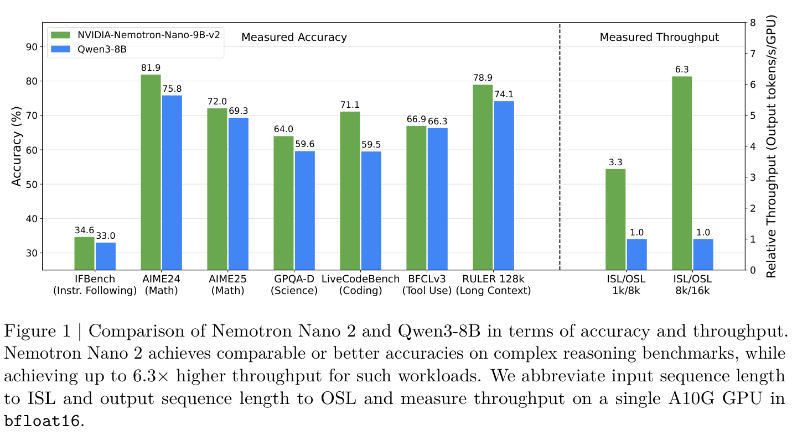
（接原文第 1 页。）
轨迹的单轮提示与回答格式。约 5% 的数据包含刻意截断的推理轨迹，使推理时能够进行细粒度思考预算控制（§3.4）。
最后，我们压缩基础模型和对齐模型，使它们能够在单张 NVIDIA A10G GPU（22 GiB 显存，bfloat16 精度）上进行 128k token 上下文长度的推理。为此，我们扩展了基于 Minitron（Muralidharan et al., 2024; Sreenivas et al., 2024; Taghibakhshi et al., 2025）的压缩策略，使其能够在约束条件下压缩推理模型。
我们在 Hugging Face 上发布以下模型：
- NVIDIA-Nemotron-Nano-9B-v2：经过对齐和剪枝的推理模型。
- NVIDIA-Nemotron-Nano-9B-v2-Base：经过剪枝的基础模型。
- NVIDIA-Nemotron-Nano-12B-v2-Base：对齐或剪枝之前的基础模型。
此外，我们在 Nemotron-Pre-Training-Dataset-v1 集合中发布大部分预训练数据集，该集合包含超过 6 万亿 token：
- Nemotron-CC-v2：Nemotron-CC（Su et al., 2025）的后续版本，新增八个 Common Crawl 快照（2024–2025），以及合成改写、去重和翻译为 15 种语言的合成问答数据。
- Nemotron-CC-Math-v1：使用 Lynx + LLM 流程（Mahabadi et al., 2025）从 Common Crawl 得到的 133B token 数学数据集。它保留公式并规范为 LaTeX，在基准上超过此前数学数据集。
- Nemotron-Pretraining-Code-v1：经过多阶段过滤、去重和质量过滤的 GitHub 代码参考资料，包含 11 种编程语言的代码问答数据。
- Nemotron-Pretraining-SFT-v1：覆盖 STEM、多语言、学术和推理领域的合成 SFT 风格数据集。
最后，我们发布一个更新后的后训练数据集：
（数据集说明接原文第 3 页。）
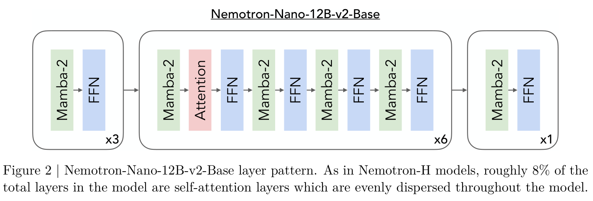
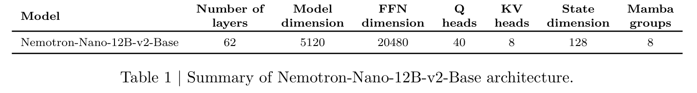
（接原文第 2 页。）
- Nemotron-Post-Training-Dataset-v2：在 NVIDIA 已发布的后训练数据集基础上，将 SFT 和 RL 数据扩展到五种目标语言：西班牙语、法语、德语、意大利语和日语。这些数据支持提高数学、代码、通用推理和指令遵循能力。
本技术报告的其余部分安排如下：§2 讨论 Nemotron Nano 2 的模型架构、预训练过程和基础模型评估结果；§3 讨论对齐过程；§4 描述用于模型压缩的剪枝与蒸馏方法。
2. 预训练
本节讨论 Nemotron-Nano-12B-v2-Base 模型的架构与预训练。我们还将该模型与其他先进模型在常用基准上的准确率进行比较。
2.1. 模型架构
与 Nemotron-H（NVIDIA, 2025）一样，Nemotron-Nano-12B-v2-Base 由 Mamba-2（Dao & Gu, 2024）、自 attention 和 FFN 层混合组成。层排列与关键架构细节见图 2 和表 1。具体而言，我们使用 62 层，其中 6 层为自 attention、28 层为 FFN、28 层为 Mamba-2。隐藏维度为 5120，FFN 隐藏维度为 20480；GQA（Ainslie et al., 2023）使用 40 个查询头和 8 个键值头。对于 Mamba-2 层，我们使用 8 个分组、128 的状态维度、64 的头维度、2 的扩展因子，以及 4 的卷积窗口大小。FFN 层使用平方 ReLU（So et al., 2022）激活函数。同样与 Nemotron-H 一致，我们不使用任何位置 embedding，使用 RMSNorm（Zhang & Sennrich, 2019），embedding 层和输出层权重独立，不使用 dropout，也不在线性层中使用偏置权重。
2.2. 预训练数据
Nemotron-Nano-12B-v2-Base 在大规模高质量整理数据和合成数据语料上进行预训练。
2.2.1. 整理数据
我们为以下主要数据类别建立独立的数据整理流程：通用网页抓取数据（英文与多语言）、数学数据和代码数据。下面依次讨论。
英文网页抓取数据。我们使用 Nemotron-CC 数据集（Su et al., 2025），并采用相同流程更新，加入八个较近期的 Common Crawl 快照（CC-MAIN-2024-33 至 CC-MAIN-2025-13）。对于合成改写，我们主要从 Mistral Nemo 12B 切换到 Qwen3-30B-A3B。此外，我们使用截至 2025 年 4 月 23 日的 CC-NEWS 数据，以改善模型的知识截止时间。CC-NEWS 数据经英文筛选和全局模糊去重，未使用其他过滤。
多语言数据。我们从三个 Common Crawl 快照中提取 15 种语言的数据：CC-MAIN-2024-51、CC-MAIN-2025-08 和 CC-MAIN-2025-18。包含的 15 种语言为阿拉伯语、中文、丹麦语、荷兰语、法语、德语、意大利语、日语、韩语、波兰语、葡萄牙语、俄语、西班牙语、瑞典语和泰语。由于没有可用的可靠多语言模型质量分类器，我们仅应用启发式过滤。其方式与 Nemotron-CC 流程中过滤低质量英文数据相近，但需要选择性关闭某些在部分语言上误报率很高的启发式过滤器。去重方式与 Nemotron-CC 相同。此外，我们还使用这些语言的 Wikipedia 和 FineWeb-2（Penedo et al., 2025）数据。
数学数据。网页上的数学内容采用多种格式，包括行内和块级 LaTeX、MathML、Unicode 符号，以及 MathJax 或 KaTeX 等自定义渲染器。我们详细分析了此前的数学专用提取流程，包括 OpenWebMath（Paster et al., 2023）、MegaMath（Zhou et al., 2025）、jusText（Endrédy & Novák, 2013）、Trafilatura（Barbaresi, 2021）和 Resiliparse（Bevendorff et al., 2018），发现它们均无法可靠地保留数学表达式或代码结构。这些工具经常丢弃或扭曲公式，并将代码格式压平，严重限制了提取内容对预训练的价值。
为解决这一问题，我们建立专门用于从 Common Crawl 高保真提取数学内容的新流程。首先，从此前数据集（例如 InfiMM-WebMath（Han et al., 2024）、OpenWebMath（Paster et al., 2023）、FineMath（Allal et al., 2025）和 MegaMath（Zhou et al., 2025））汇集全面的数学相关 URL 列表，然后从 98 个 Common Crawl 快照（2014–2024）重新获取原始 HTML 文档。每个页面通过 lynx 文本浏览器渲染，以保留布局和数学结构。随后，使用 Phi-4（Abdin et al., 2024）（14B 参数）去除模板化冗余内容，将符号规范为 LaTeX，并纠正不一致。使用 FineMath 分类器（Allal et al., 2025）保留高质量文档，再通过 NeMo-Curator 框架1，使用基于 MinHash（Broder, 2000）的 LSH（Indyk & Motwani, 1998）进行模糊去重。最后，使用 LLM Decontaminator（Yang et al., 2023）对数据集去污染。
该流程产生了包含 133B token 的语料 Nemotron-CC-Math-3+，以及仅包含最高评分样本、更高质量的 52B token 子集 Nemotron-CC-Math-4+。用于预训练时，该数据集在数学（MATH-500）、代码（HumanEval+、MBPP+、
（基准说明接原文第 5 页。）
（接上页）MBPP）以及通用领域评估（MMLU、MMLU-STEM、MMLU-Pro）上，超过了所有现有的开放数学数据集。完整细节见 Mahabadi et al.（2025）。
代码数据。与 Nemotron 系列此前的模型（NVIDIA, 2025, 2024；Parmar et al., 2024）一致，我们使用大规模原始源代码对 Nemotron-Nano-12B-v2-Base 进行预训练。用于训练该模型的所有源代码均来自 GitHub，并经过多阶段处理流水线，最终形成源代码训练数据。我们使用与 BigCode 项目（Lozhkov et al., 2024）类似的许可证检测流水线，按许可证删除数据，但接受的许可证更少（更多细节见附录 A）。去重对源代码尤其重要，因为许多文件会在大量仓库中完全重复。因此，我们同时进行了精确去重（通过哈希）和模糊去重（使用 MinHash LSH）。为了更好地了解数据集中的每个文件，我们使用多种指标标注所有文件，然后根据这些标注进行过滤。我们发现 OpenCoder（Huang et al., 2025）的启发式过滤器很有效，并用它们过滤对 LLM 预训练价值较低甚至有害的文件。
2.2.2 合成生成的数据
STEM 数据。我们使用从多个来源收集的 88.6k 个问题作为种子数据，为天文学、生物学、化学、数学和物理等 STEM 学科生成合成数据。除了广泛使用的 GSM8K、MATH 和 AOPS 训练集，我们还从 Stemez2、OpenStax3 和 Open Textbook Library4 中采用宽松许可证的教科书收集更多样的问题。我们使用 Qwen2.5-VL-72B-Instruct（Bai et al., 2025）从教科书的练习部分提取问题，并提供额外指令，例如去掉题号、忽略需要解读图像的问题，以及用 LaTeX 格式表示方程。我们人工整理提取的问题，修复偶尔出现的 OCR 错误，并删除不能独立理解的问题（例如引用同一章中某个示例的问题）。
为了扩大问题的数量和多样性，我们使用四个模型进行了三轮问题生成，即均启用思考模式的 Qwen3-30B-A3B 和 Qwen3-235B-A22B（Yang et al., 2025）、Deepseek-R1（DeepSeek-AI, 2025a）以及 Deepseek V3（DeepSeek-AI, 2025b），并使用三种提示词：
- 相似问题：创建一个探索类似概念、但提供全新挑战的新问题。
- 更难的问题：创建一个需要更多逻辑步骤或涉及更高阶概念的新问题。
- 不同类型的问题：创建一个与原问题类型不同的新问题。我们要求模型避免表面或无关紧要的修改，并在创建新问题时完整思考解题过程。
我们使用模糊去重过滤重复和高度相似的问题，并使用问题生成步骤中的模型为剩余问题生成解答。我们将部分示例转换为 MMLU 或 MMLU-Pro 风格的多项选择题。我们通过拼接随机合成样本，构建了数千个少样本示例。
数学数据。我们还重新审视并重新生成了 Nemotron-MIND 数据集（Akter et al., 2024），这是一个最初基于 OpenWebMath 构建、融入数学知识的合成预训练语料库。在我们更新后的（接下页）
2 https://www.stemez.com/
3 https://openstax.org
4 https://open.umn.edu/opentextbooks/
（接上页）版本中，我们使用 Nemotron-CC-Math-4+ 作为源语料库重新生成 MIND 数据集；它是我们质量最高的数学子集，包含 52B 个 token。沿用原始方法，我们应用七种提示词模板（例如师生对话、辩论、访谈等），使用 Phi-4 模型生成结构化数学对话。原始 MIND 依赖 14.7B 个保真度较低的数据 token，而我们的版本使用质量显著更高的输入，并以 5K token 的分块大小处理。这次重新生成产生了一个包含 73B token 的合成数据集，与原始 MIND 版本相比，在数学推理和通用知识（MMLU、MMLU-Pro、MMLU-Stem）基准上均带来一致提升，突显了输入数据质量的关键作用。完整细节和结果见 Mahabadi et al.（2025）。
多语言数据。我们从两个来源生成多语言多样化问答数据（Diverse QA）（Su et al., 2025）：
- 使用 Qwen3-30B-A3B（Yang et al., 2025）将英语 Diverse QA 数据翻译为十五种语言（见“多语言数据”）。
- 使用 Diverse QA 提示词从这些语言的 Wikipedia 文章生成合成数据，并要求模型用目标语言编写所有问题和答案。
此外，我们使用 Qwen3-30B-A3B 将 GSM8K 扩增数据的一个子集（见“STEM 数据”）翻译为这些语言。我们对每个翻译后的解答进行后处理，追加一句表示“答案是……”的结语（例如西班牙语的“La respuesta es ...”、德语的“Die Antwort lautet ...”），其中最终数值答案从原始英语解答中提取。
代码数据。我们为 11 种不同编程语言大规模生成问答（QA）数据：提示 LLM 根据整理后的源代码中的短片段生成问题，要求模型解答生成的问题，然后根据适当的启发式规则（例如 Python AST 解析）对生成的 QA 对进行事后过滤。这种技术产生面向问题求解的多样化合成数据，同时包含自然语言和源代码。更多细节见 Nemotron-H 技术报告（NVIDIA, 2025），我们首次在预训练中使用此类合成代码数据就是在该报告中。
学术数据。在 Nemotron-H（NVIDIA, 2025）系列模型的预训练集中，我们为所有来自学术数据的文档赋予教育质量、教育难度和教育学科属性标签；学术数据涵盖教科书和学术论文。由于技术领域中教育难度较高的内容对模型仍然具有挑战，我们在当前预训练集中优先通过生成问答（QA）对来提高模型对这类信息的理解，因为此类数据已被证明可以增强语言模型中的知识存储和提取（Allen-Zhu & Li, 2024）。
为此，我们首先收集以下技术学科领域中教育难度处于本科和研究生水平的所有文档：数学、化学、生物学、物理学和医学。使用这一文档子集，我们希望找到最相关的文本片段，作为生成 QA 对的种子上下文。我们将每篇文档切分为长度为 512 token 的片段，使用 e5-large 模型（Wang et al., 2024）生成 embedding，并将它们存入支持近似最近邻搜索的 Milvus 向量数据库。随后，我们从一组复杂学科领域整理文档（例如数学：实分析；生物学：遗传学；统计学：信息论），并针对每个查询文档在 Milvus 数据库中查询 250 个最近邻文本片段。返回的片段作为种子上下文，接着输入 Qwen-2.5 72B instruct 模型（Qwen, 2025），根据片段包含的信息生成多项选择和自由作答形式的 QA 对。对于每个 QA 对，还额外生成答案的论证说明。
SFT 风格数据。在预训练后期阶段使用 SFT 风格数据已被证明有助于促进模型更全面的学习（Hu et al., 2024）。
因此，我们合成并纳入了覆盖多个领域的不同 SFT 风格数据：1）主要侧重求解代码问题的代码 SFT 数据；2）主要侧重推理的数学 SFT 数据；3）包含覆盖不同知识主题的各类问答示例的 MMLU 风格 SFT 数据；以及 4）通用指令遵循 SFT 数据。
对于上述各个领域，我们确保 SFT 风格数据涵盖不同难度的多样主题。上述 SFT 数据的详细合成方法和流水线见此前的工作（Toshniwal et al., 2024；Moshkov et al., 2025；Bercovich et al., 2025a,b；Ahmad et al., 2025b,a；Majumdar et al., 2024）。
基础推理 SFT 风格数据。虽然上述 SFT 风格数据有助于增强 LLM 在代码、数学和通用语言理解基准中回答问题的能力，但它们无法改善模型在更深层次推理任务中，从更大的潜在干扰选项池中辨别正确答案的能力。我们提出通过合成侧重分析推理、逻辑推理和阅读理解的 SFT 风格数据来缓解这一问题。
具体而言，我们收集了现有数据集，包括：1）Wang et al.（2022）和 Zhong et al.（2022）的 Law School Admission Test（LSAT）数据集，涵盖逻辑推理、阅读理解和分析推理三个任务；2）Liu et al.（2020）重新用于此任务的 LogiQA 数据集，包含从中国国家公务员考试中收集的各类逻辑推理问题；以及 3）Ling et al.（2017）侧重代数应用题的 AQuA-RAT 数据集。随后，我们分别提示 DeepSeek-V3（DeepSeek-AI, 2025b）和 Qwen3-30B-A3B（Yang et al., 2025）合成更多类似的问题及对应选项。对于我们生成的每个问题，我们再次提示 DeepSeek-V3 生成 CoT 过程及最终解答。在后处理阶段，我们应用多数投票，只保留答案获得最多票数的样本。总体而言，我们使用 DeepSeek-V3 生成了 4B token，使用 Qwen3-30B 模型生成了 4.2B token。
2.3 数据混合与顺序
我们的数据混合包含十三类数据。最大的一类是网页抓取数据，我们根据 Nemotron-CC 质量分类（Su et al., 2025）将其分为四类：crawl-medium、crawl-medium-high、crawl-high、syn-crawl-high，分别表示中等、中高、高质量以及合成的高质量抓取数据。除此之外，我们的数据混合还包含数学、Wikipedia、代码、学术数据、crawl++、多语言和合成 SFT 风格数据等类别，其中合成 SFT 风格数据进一步分为 general-sft、stem-sft 和 code-sft。Crawl++ 包含 OpenWebText、BigScience 和 Reddit 等网页抓取衍生数据。我们的多语言数据包含十五种语言：阿拉伯语、丹麦语、德语、西班牙语、法语、意大利语、葡萄牙语、荷兰语、波兰语、瑞典语、泰语、中文、日语、韩语和俄语。我们设计数据混合，使质量相近的数据来源获得相近的权重。高质量来源的权重高于低质量来源。Feng et al.（2024）和 NVIDIA（2025）提供了有关数据集质量估计和混合构建过程的详细说明。
我们使用基于三阶段数据混合方法的课程来预训练 Nemotron-Nano-12B-v2-Base。第一阶段使用促进数据多样性的数据混合；第二和第三阶段主要使用高质量数据集（例如 Wikipedia）。我们在训练完成 60% 时切换到第二阶段，在训练完成 90% 时切换到第三阶段。各阶段使用的数据混合如图 3 所示。
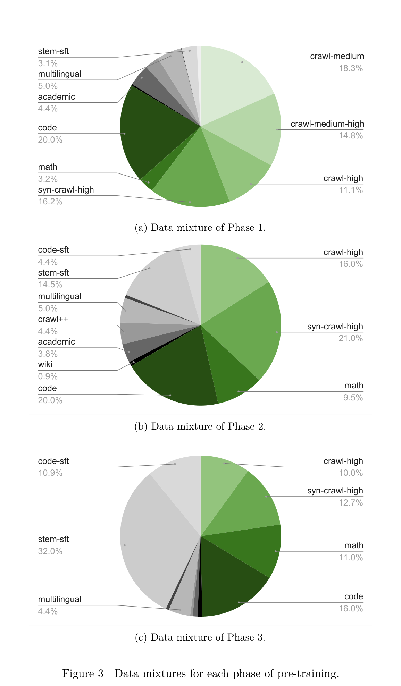
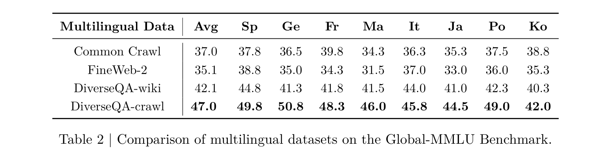
2.3.1 多语言数据消融研究
在第 2.2 节，我们介绍了整理数据和合成数据中的几个多语言大类：
- Common Crawl：通过我们自己的流水线从近期 Common Crawl 快照中提取。
- FineWeb-2（Penedo et al., 2025）。
- DiverseQA-wiki：使用翻译后的 Diverse QA 提示词，从多语言 Wikipedia 文章生成。
- DiverseQA-crawl：从英语 Diverse QA 数据翻译而来。
为了决定这些不同多语言数据来源之间的适当混合比例，我们首先进行消融实验，比较四种多语言数据在下游任务中的表现。
具体而言，我们使用一个已经训练了 350B token 的 1B 模型 checkpoint，再继续预训练 100B token。继续预训练数据中，50% 分配给多语言数据，其余 50% 使用默认预训练数据混合。我们使用 Global-MMLU 基准（Singh et al., 2024a）评估各模型的表现；结果见表 2。我们整理的基于 Common Crawl 的多语言数据略优于基于 Fineweb2 的多语言数据，而合成多语言 QA 对显著优于整理的多语言网页抓取数据。从英语 Common Crawl 翻译得到的多样化问答对，在我们评估的 8 种语言上取得了最高平均分。因此，决定多语言数据混合时，我们赋予 DiverseQA-crawl 数据的权重远高于其他类别。
2.3.2 基础推理 SFT 风格数据消融研究
为了展示第 2.2 节介绍的侧重基础推理（FR）的 SFT 风格数据的有效性，我们使用一个已经训练了 14.5T token 的 Nemotron-H-8B（NVIDIA, 2025）中间 checkpoint，再继续预训练 100B token。我们将这 100B token 中的 5% 分配给新合成的 FR-SFT 数据（替换 Common Crawl 数据），并保持其他所有数据类别与 Nemotron-H-8B 的第三阶段混合相同。我们将这个模型与同样训练了 14.6T token 的 Nemotron-H-8B 进行比较。详细评估基准在第 2.7 节介绍。比较结果见表 3。SFT 风格数据将 Nemotron-H 8B 模型的 MMLU-Pro 表现从 44.24 提升至 56.36，并使平均 MATH 得分提高约 2 分。MMLU-Pro 是一个更具挑战性的基准，评估模型的语言理解能力，同时要求模型具备出色的推理能力，才能从十个选项中选择正确答案。我们的 SFT 数据通过基础推理，帮助模型从另外九个干扰选项中选出正确答案。我们未观察到平均常识推理和平均代码基准表现下降。
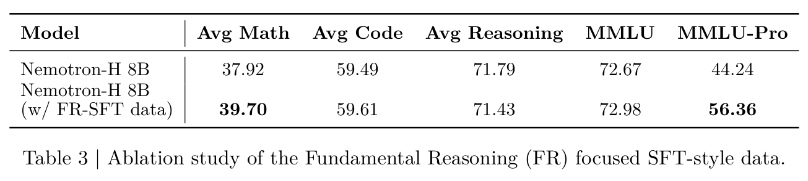
2.4 FP8 方案
我们在整个预训练过程中使用 DeepSeek 的 FP8 训练方案（DeepSeek-AI, 2025b）。具体而言，我们对所有张量使用 E4M3，对权重使用 \(128\times 128\) 量化块，对激活使用 \(1\times 128\) 小块。与 Nemotron-H 不同，我们直接以 E4M3 保存模型权重，从而可以在 FP8 中执行分布式优化器的参数 all-gather 操作（跨 DP 副本）；主权重仍保存在 FP32 中。相对于 DeepSeek 方案的一个例外是，和 Nemotron-H 一样，我们将最前面和最后面的四个线性层保留为 BF16。另一个不同于 DeepSeek-V3 训练的地方是，我们将所有优化器状态保留在 FP32 中。我们没有观察到这种数值精度选择导致训练不稳定。
2.5 超参数
我们以 20 万亿 token 的总训练量训练 Nemotron-Nano-12B-v2-Base。序列长度为 8192，全局 batch 大小为 768（每批 6,029,312 个 token）。我们没有使用 batch 大小逐步增加。我们使用 WSD（Warmup-Stable-Decay，warmup—稳定—衰减）（Hu et al., 2024）学习率调度，“稳定”学习率为 \(4.5\times 10^{-4}\)，最小值为 \(4.5\times 10^{-6}\)；学习率在最后 3.6 万亿 token 期间衰减。权重衰减设为 0.1，Adam 的 \(\beta _{1}\) 和 \(\beta _{2}\) 分别设为 0.9 和 0.95。
2.6 长上下文扩展
为了确保 Nemotron-Nano-12B-v2-Base 能在长上下文窗口上推理，我们在预训练第三阶段之后增加了一个长上下文阶段（阶段 LC）。在阶段 LC，我们使用 524,288（512k）token 的上下文长度，以恒定的 \(4.5\times 10^{-6}\) 学习率继续预训练（CPT）。虽然 Nemotron Nano 2 的目标上下文长度为 128k，但在 Nemotron-H 8B 模型的初步研究中，我们发现使用 512k 序列长度进行 CPT 比使用 256k 或 128k 更好。我们的直觉是，更长的训练序列能够有效降低连贯长文档被预训练数据加载的 Concat & Chunk 算法截断并分隔的概率。我们使用 8 路 TP 和 16 路 CP，确保训练 512k token 长度的序列仍能放入 GPU 显存。我们使用全局 batch 大小 12，确保长上下文 CPT 期间每个全局 batch 的总 token 数与预训练相同，约为 6M token。阶段 LC 包含 18.9 billion token。
此外，我们生成长上下文合成数据，为阶段 LC 创建更多高质量数据。由于学术预训练数据集是连贯长上下文文档的良好来源，我们使用其中长度超过 32k token 的文档作为种子数据。我们沿用 Llama-3（Meta, 2024）和 Qwen-2.5（Qwen, 2025）技术报告介绍的方法，生成长上下文文档 QA 数据。我们将每篇文档切分为 1,024 token 的块，然后随机选择其中 10% 输入 Qwen-2.5-72B-Instruct 来合成数据。我们要求生成器根据文本块中的信息生成一个 QA 对。我们将 QA 对拼接起来，并追加到原始文档末尾，作为一个长上下文文档 QA 数据样本。这类长文档 QA 为模型学习长（接下页）
（接上页）上下文依赖关系提供了良好素材。关于训练序列长度和合成数据影响的 Nemotron-H 8B 消融结果，见表 4。
阶段 LC 使用的数据混合基于第三阶段的数据混合构建。我们按比例将所有第三阶段数据的权重下调至原值的 80%，将剩余 20% 分配给新增的长上下文文档 QA 数据。我们发现这种混合可以有效扩展 Nemotron-Nano-12B-v2-Base 的上下文长度，同时不降低常规基准得分。
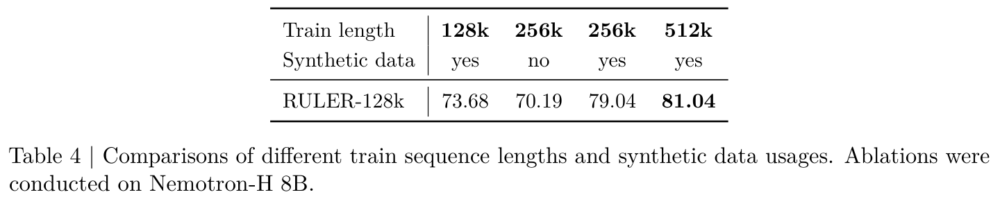
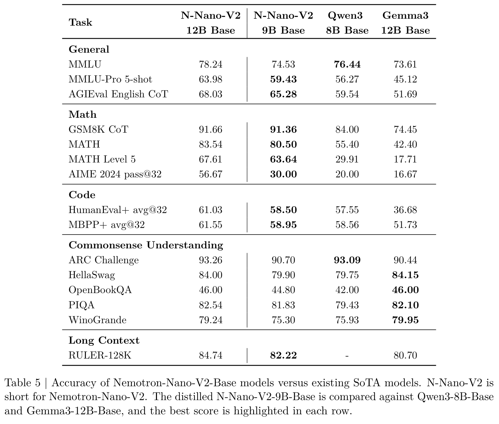
2.7 基础模型评估
除非另有说明，所有模型的评估均由我们自行运行。为了公平比较，我们基于 lm-evaluation-harness5 构建评估设置，并进行了以下调整：
- 对于数学推理，我们使用贪心 decoding 评估 GSM8K 和 MATH（Cobbe et al., 2021；Hendrycks et al., 2021b）基准。我们还将 MATH 基准中竞赛级难度的子集单独列为“MATH Level 5”。此外，我们报告 AIME-2024 上的 pass@32 表现。我们使用 Math-Verify6 为所有生成结果评分。
- 对于代码任务（HumanEval（Chen et al., 2021）、MBPP（Austin et al., 2021）），我们在零样本设置下评估 EvalPlus 版本，并清理生成结果（Liu et al., 2023）。我们根据每个提示词的 32 次生成估计 avg@32 和 pass@1。
- 通用推理基准（OpenBookQA（Mihaylov et al., 2018）、PIQA（Bisk et al., 2019）、Hellaswag（Zellers et al., 2019）、Winogrande（Sakaguchi et al., 2019））保持不变，只有 ARC-Challenge（Clark et al., 2018）例外：我们像 MMLU（Hendrycks et al., 2021a）一样，同时呈现所有选项。
- 对于多语言能力，我们评估 MGSM（Shi et al., 2022）（8 样本、原生语言 CoT）和 Global MMLU-Lite（Singh et al., 2024b）。
- 我们使用 RULER（Hsieh et al., 2024）作为长上下文基准。我们报告 RULER 包含的全部 13 个任务的平均得分。
表 5 和表 6 展示了 Nemotron-Nano-12B-v2-Base 的准确率结果，以及与 Qwen3-8B Base 和 Gemma3-12B Base 的比较。我们还列出了 Nemotron-Nano-12B-v2-Base 的 9B 剪枝版本的准确率，该版本在第 4 节讨论。
3 对齐
本节介绍我们将基础 checkpoint 转换为对齐后的 12B checkpoint 所采用的对齐过程。流程概览见图 4。
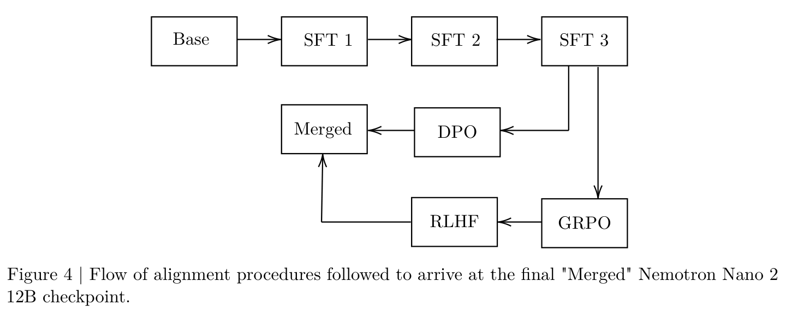
5 https://github.com/EleutherAI/lm-evaluation-harness
6 https://github.com/huggingface/math-verify
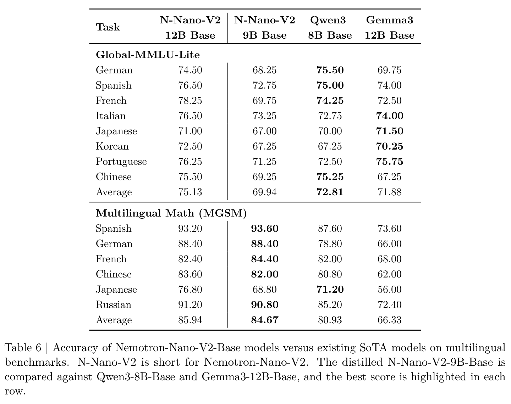
3.1 后训练数据
我们的对齐从大规模 SFT 阶段开始，该阶段使用约 80 billion token 的提示词—回答对训练基础模型。各领域的分布见表 7。
数学、科学和代码。对于数学（Toshniwal et al., 2024；Moshkov et al., 2025）、科学和代码（Ahmad et al., 2025b,a；Majumdar et al., 2024）数据，我们使用开放权重的 DeepSeek-R1-0528 模型（DeepSeek-AI, 2025b）生成回答，所用提示词与训练 Nemotron-H-8B 和 47B Reasoning 模型（NVIDIA, 2025）时相同。训练数据已作为 Nemotron-Post-Training-Dataset-\(v1^{7}\) 的一部分发布。
工具调用。工具调用数据集包含单轮、多轮和多步骤对话。对于单轮场景，我们从 xlam-function-calling-\(60k^{8}\)、glaive-function-calling-\(v2^{9}\) 和 NVIDIA-When2Call（Ross et al., 2025）中采样提示词，并使用 Qwen3-235B-A22B10 生成回答。受到 ToolACE（Liu et al., 2024）和 APIGen-MT（Prabhakar et al., 2025）的启发，我们通过模拟对话，将其扩展到多轮和多步骤场景，其中（接下页）
7 https://huggingface.co/datasets/nvidia/Nemotron-Post-Training-Dataset-v1
8 https://huggingface.co/datasets/xlam-function-calling-60k
9 https://huggingface.co/datasets/glaive-function-calling-v2
10 https://huggingface.co/Qwen/Qwen3-235B-A22B
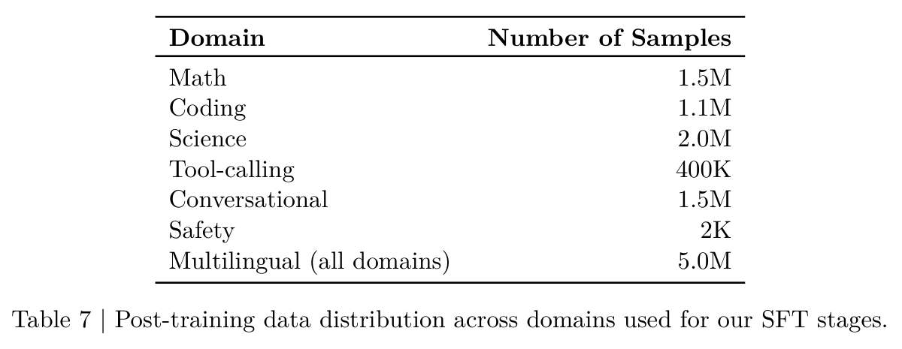
（接上页）Qwen3-235B-A22B 分别扮演 User-Agent、Assistant-Agent 和 API-Server-Agent。User-Agent 查看可用工具，提出具有挑战性的问题，在 Assistant 向其发问时参与交互，并在最后判断任务是否成功。每个实例都配有从 Nemotron-Personas11 随机抽取的人设，以丰富问题的多样性。
Assistant-Agent 接收初始问题和可用工具，通过调用工具、解释工具返回结果，并在单轮、多轮或多步骤场景中与 User-Agent 交互来执行任务。同时，API-Server-Agent 充当模拟 API 服务器，检查参数，并根据正确性返回有效输出或错误消息。一层轻量的基于规则的工具调用验证进一步提高可靠性，确保输出一致且可验证，并且只保留成功的轨迹。
多语言数据。我们的多语言合成后训练数据通过翻译现有英语后训练数据构建。为了应对生成合成翻译数据时 LLM 的幻觉以及长输入下的质量下降，我们实现了稳健的质量保证流水线。我们的方法逐行翻译输入以控制复杂度，并跳过代码等不应翻译的内容。我们还强制采用严格的括号格式，以可靠提取结果，并使用语言识别过滤偏离目标语言的译文，从而确保最终输出质量。
对话数据。对于对话数据，我们使用 LMSYS 数据集（Zheng et al., 2023）的提示词，并使用 Qwen3-235B-A22B 推理模型（Yang et al., 2025）生成回答。我们还纳入 HelpSteer2 和 HelpSteer3 的提示词，搭配同一模型生成的回答。此外，我们使用 WildChat-1M（Li et al., 2024b）中约 550k 个提示词的子集，同样用 Qwen3-235B-A22B 生成推理回答。我们还使用 NVIDIA（2025）中的多轮对话提示词，纳入由 Deepseek R1 回答的多轮对话。
安全性。我们混合使用来自 Nemotron Content Safety Dataset V2（Ghosh et al., 2025）12、HarmfulTasks（Hasan et al., 2024）、RedTeam2K（Luo et al., 2024）和 gretel-v1（gre, 2024）的有害与无害提示词。回答由 DeepSeek-R1-052813 生成。为确保安全，我们采用两步方法：先通过提示词引导，再用防护模型过滤，以验证输出仍然安全。
11 https://huggingface.co/datasets/NVIDIA/Nemotron-Personas
12 https://huggingface.co/datasets/nvidia/Aegis-AI-Content-Safety-Dataset-2.0
13 https://huggingface.co/deepseek-ai/DeepSeek-R1
3.2 后训练
第一阶段 SFT。如图 4 所示，我们采用三个不同的 SFT 阶段。第一阶段使用第 3.1 节介绍的完整数据集，并额外抽取约 10% 的提示词子样本，配上去除了推理轨迹的输出。这让模型接触“空”轨迹，使其能够在关闭推理模式下给出直接答案。为了提高效率，并保留预训练获得的长上下文能力，我们将样本拼接为长度约 128k token 的序列，以减少填充开销，并促进长距离学习。
第二阶段 SFT。第二阶段针对工具调用。虽然第一阶段改善了大多数基准的表现，但工具调用准确率下降。我们将其归因于将样本拼接到 128k 长度，这可能干扰了工具调用模式的学习。因此，第二阶段不进行拼接，使用完整工具调用数据集以及其他领域的代表性子样本进行训练。
第三阶段 SFT。第三阶段强化长上下文能力。它纳入了遵循 Nemotron-H 准备方案（NVIDIA, 2025）的长上下文数据，以及跨领域扩增示例：这些示例的推理轨迹被突然截断为 1–2k token，同时保留最终答案。这种截断策略提高了模型在不同推理时思考预算下的稳健性。
IFeval RL。为改善指令遵循，我们从 LMSYS Chat 数据集采样 16,000 个提示词，并为其增加 IFEval 风格的指令。基于规则的验证器根据输出对各条指令的满足程度评分，形成优先强调精确遵循指令的奖励信号。IFeval RL 实验显著提升了 IFEval 能力，而其他基准略有波动，因此需要谨慎选择 checkpoint。
DPO。在另一个训练分支中，我们应用 DPO 算法改善工具调用。我们使用 BFCL v3 基准评估表现，该基准在 BFCL v2 的基础上，更重视多步骤（通过多次工具调用实现目标）和多轮（用户与 agent 之间的多次交互）能力。为强化 Nano V2 对齐模型的这些能力，我们使用 WorkBench 环境，这是一个从 Styles（Styles et al., 2024）改编而来的多步骤、可验证工具调用设置。在每个 WorkBench 任务中，模型必须跨多个步骤发出一系列工具调用，并通过比较数据库状态验证正确性。
Nano V2 在这一环境中通过迭代的 Direct Preference Optimization 阶段进行强化学习。对于长上下文阶段的每个候选 checkpoint，我们为每个 WorkBench 提示词生成 on-policy 数据，包含正例（成功的工具调用）和负例（失败的生成）。这一过程确保迭代 DPO 始终使用 on-policy 数据。
RLHF。我们使用 Arena-Hard 基准评估模型的整体帮助性和聊天能力。为了提高该基准上的表现，我们使用 GRPO，以 HelpSteer3（Wang et al., 2025）中仅英语的上下文训练 SFT 阶段的候选 checkpoint。训练期间，我们分别生成包含和不包含思考轨迹的回答，并使用基于 Qwen 的 RM 评判 rollout。
模型合并。训练期间，我们观察到推理能力和聊天能力之间存在权衡。为此，我们选择 checkpoint 插值（Wortsman et al., 2022），（接下页）
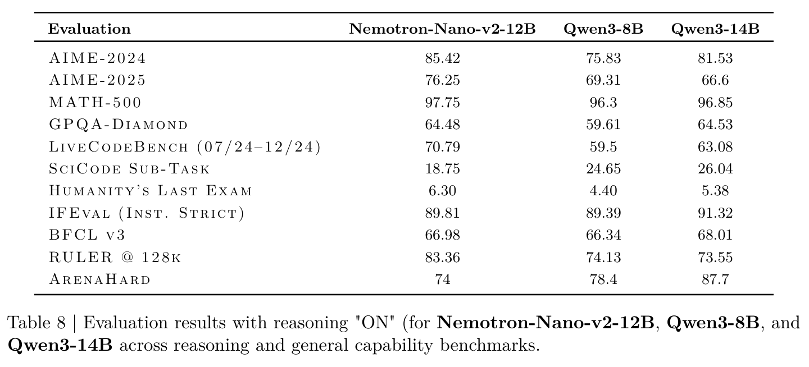
（接上页）将具有较强推理能力的 RL checkpoint 与具有较强聊天能力的 RL checkpoint 混合。Checkpoint 插值通过对模型权重进行线性插值实现：\((1 - \alpha ) \cdot w_{model1} + \alpha \cdot w_{model2}\)。我们对 \(\alpha\) 从 0.1 到 0.9、步长为 0.1 的取值进行了参数扫描，发现约为 0.5 的值提供了良好的权衡。
3.3 评估
表 8 总结了我们的 12B 模型表现。为测试跨领域推理能力，我们在 MATH-500（Lightman et al., 2023）、AIME-2024、AIME-2025、GPQA-Diamond（Rein et al., 2023）、LiveCodeBench（07/24–12/24）（Jain et al., 2024）、SciCode（Tian et al., 2024）和 Humanity’s Last Exam（Phan et al., 2025）上评估模型。为更广泛地评估多样化能力，我们使用 IFEval（Zhou et al., 2023）评估指令遵循，BFCL v3（Yan et al., 2024）评估工具调用，RULER 评估长上下文，以及 ArenaHard（Li et al., 2024a）评估聊天能力。
我们使用 NeMo-Skills14 进行评估。对于 AIME-2024 和 AIME-2025，报告 16 次运行的 Pass@1 平均值；对于 MATH-500、GPQA-Diamond、LiveCodeBench 和 IFEval，报告 4 次运行的平均值；对于 BFCL v3、SciCode、Humanity’s Last Exam、RULER 和 ArenaHard，报告 1 次运行的得分。
3.4 预算控制评估
Nemotron Nano V2 允许用户指定模型在生成最终答案之前最多生成多少思考 token。最终答案是通常呈现给终端用户的那部分文本。该功能通过在模型开始生成 <think> token 后计数 token 来实现。达到预算后，推理设置尝试插入关闭标签 </think>。我们不立即插入，而是让模型完成当前句子，并在下一个换行处放置标签。在没有出现换行的极端情况下，系统会在超出预算 500 个 token 之内强制关闭：如果到第（预算 + 500）个 token 时仍没有换行，就强制插入 </think> 标签。图 5b 展示了我们模型的预算控制行为。除了展示模型在不同预算下的准确率，我们还检查各个预算下生成结果的格式是否正确。我们检查两类失败模式：
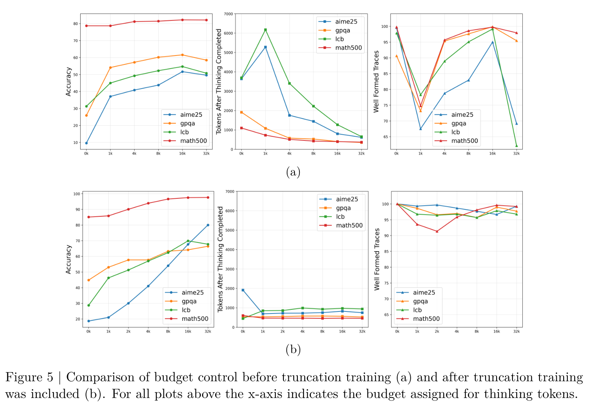
- 一种失败模式是，模型在最终答案中使用更多 token，以“补偿”对思考轨迹的限制。如果 SFT 阶段没有截断训练示例，这种补偿效应很普遍（图 5a，中间）。但使用截断训练后，该效应消失（图 5b，中间）。
- 另一个问题是，插入关闭标签
</think>后，模型仍可能处于“思考模式”。当模型在强制插入后再次生成关闭标签时，就能观察到这一点，说明模型没有充分“识别”人工关闭。我们通过“格式正确性”评估这一现象：格式正确的回答应只包含一个关闭标签（无论是因预算而强制插入，还是自然生成）。图 5a（右）表明，预算较短时，格式正确的回答比例急剧下降。但经过截断训练，模型始终生成格式正确的回答（图 5b，右）。
4 剪枝与蒸馏
本节介绍将对齐后的 12B 模型压缩为 Nano 2 模型的剪枝与蒸馏过程，目标是在 NVIDIA A10G GPU 上运行更长上下文（128k 序列长度）的推理。注意，仅以 bfloat16 精度存储一个 12B 参数模型的权重就需要 22.9 GiB，超过 A10G GPU 的 22 GiB 显存容量；这清楚地表明需要压缩。
我们的压缩策略基于 Minitron（Muralidharan et al., 2024；Sreenivas et al., 2024；Taghibakhshi et al., 2025），它是一个用于 LLM 的轻量模型剪枝框架。Minitron 最初设计用于压缩预训练基础模型，以满足用户定义的参数预算；在本工作中，我们将其扩展到压缩推理模型，同时也纳入（接下页）
（接上页）上述显存约束和基于吞吐量的目标。
4.1 重要性估计
我们为模型的每个组件（例如层、FFN 神经元）收集重要性或敏感度得分，以帮助决定删除哪些组件；这就是重要性估计阶段。这一阶段计算的得分用于决定可以剪除哪些模型组件。我们指出，在现代 LLM 规模下，基于 gradient 信息的敏感度分析通常不切实际（Muralidharan et al., 2024）；因此，我们依赖一种只使用前向传播的轻量策略。本工作使用一种在消融研究中表现良好的简化方法：a）剪除层；b）剪除 FFN 隐藏维度（实际上是神经元）和 embedding 通道。我们还尝试剪除 Mamba 头；遗憾的是，这一维度导致准确率严重下降。下面介绍如何计算每个层、embedding 通道、FFN 神经元和 Mamba 头的重要性。
层重要性。我们以迭代方式计算层重要性：对于每个候选层，暂时从模型中删除它，并计算原始模型 logits 与剪枝模型 logits 之间的均方误差（MSE）。这个 MSE 反映该层对模型预测的贡献：较低值表示影响较小。在每一步剪枝中，我们删除 MSE 最低的层，因为它对最终输出的影响最小。我们重复这一过程，直到达到所需深度。这一策略确保优先剪除那些缺失后对模型行为影响最小的层。关于基于迭代 MSE 的层重要性的更多细节，请参阅 NVIDIA（2025）。
FFN 和 embedding 通道重要性。FFN 层内部由两个线性算子组成，中间是一个非线性激活：
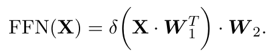
这里，\(X\) 表示输入，\(W_{1}\) 和 \(W_{2}\) 是 FFN 层中对应的两个权重矩阵。\(W_{1}\)、\(W_{2} \in \mathbb{R} ^{d_{ffn}\times d_{model}}\)，其中 \(d_{model}\) 和 \(d_{ffn}\) 分别是模型隐藏维度和 FFN 隐藏维度。\(\delta (\cdot )\) 表示非线性激活函数（本工作中为平方 ReLU）。
沿用 Minitron（Muralidharan et al., 2024）的流程，我们通过检查每个 FFN 层第一个线性算子中各神经元产生的输出集合，计算各神经元的重要性。为此，我们使用一个包含 1024 个样本的小型校准数据集。形式上，我们通过聚合神经元在给定输入 batch \(X\) 时的输出，计算其重要性得分：
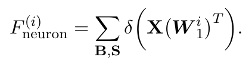
这里，\(W_{1}^{i}\) 表示权重矩阵 \(W_{1}\) 的第 \(i\) 行。\(\sum _{B,S}\) 表示沿 batch 和序列维度聚合。根据 Minitron 论文中的观察，我们沿 batch 和序列维度使用均值和 l2 范数聚合函数。对于得分序列 \(S\)，均值聚合定义为 \((1/n)\sum ^{n}_{i=1}|S_{i}|\)，l2 范数为 \(\sqrt{\sum ^{n}_{i=1}S_{i}^{2}}\)。Embedding 通道的重要性以类似方式计算，但检查的是 LayerNorm 层的输出；更多细节请参阅 Muralidharan et al.（2024）。
Mamba 重要性。Mamba 层通过多个投影矩阵（\(W_{x}\)、\(W_{z}\)、\(W_{B}\)、\(W_{C}\)、\(W_{dt}\)）处理输入，在因果卷积和选择性 SSM 更新之前产生中间表示，随后进行 gated norm 和输出投影（\(W_{O}\)）。我们采用 Taghibakhshi et al.（2025）介绍的方法估计重要性：具体而言，在一个包含 1024 个样本的小型校准数据集上，采用基于激活的嵌套评分策略，类似于 FFN 重要性，但针对 Mamba 的分组结构作了调整。首先，我们从 \(W_{x}\) 投影获得激活得分，记为 \(s \in \mathbb{R} ^{m_{h}\times m_{d}}\)，其中 \(m_{h}\) 是 Mamba 头数，\(m_{d}\) 是 Mamba 头的通道维度。对于每个通道 \(d\)，得分计算为
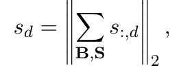
其中聚合沿 batch（\(B\)）和序列（S）维度进行，同时使用均值和 l2 范数指标。接着，在 Mamba 头的通道集合上使用 l2 范数计算头得分：
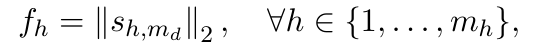
并在每个 Mamba 分组 \(\mathcal{G} _{g}\) 内对头进行排序，以保留分组计算语义：
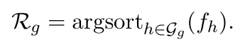
这确保剪枝决策遵守模型结构约束和 SSM 的序列建模。通过从所有受影响的投影、卷积和 SSM 参数矩阵中裁去对应行，剪除得分最低的头。这一策略在删除较不重要的 Mamba 头的同时，保留 SSM 块的完整性。如 Taghibakhshi et al.（2025）所示，剪除 Mamba 头比剪除头通道能实现更好的准确率与吞吐量权衡；因此，本工作侧重头剪枝。
4.2 轻量神经架构搜索
我们首先定义 Nano 2 模型的约束和目标，然后介绍轻量神经架构搜索（NAS）框架，它找出满足目标和约束的最有前景的架构候选。
显存约束。推理期间的显存需求由两个不同部分组成，它们具有不同的扩展行为。参数显存虽然很大，但不随输入大小变化。相比之下，KV cache 显存随 batch 大小和序列长度线性增长，在长序列场景中往往成为主导因素。对于 Nano 2 模型，我们的目标是在 19.66 GiB 的显存预算内，以 128k 序列长度和至少为 1 的 batch 大小进行推理。预算计算如下：从 NVIDIA A10G GPU 的 22.06 GiB 可用显存中，减去用于 vLLM 和 TensorRT-LLM 等框架的 5% 缓冲区，再减去 1.3 GiB，为视觉编码器留出足够空间。
吞吐量测量。对于下面的实验，除非另有说明，我们分别使用 8k 和 16k token 的输入与输出序列长度测量吞吐量；我们认为这代表典型推理场景。对于这一输入和输出序列长度组合，我们报告能够放入 A10G GPU 的最大 batch 大小下的 vLLM 输出 token 生成吞吐量。
4.2.1 候选枚举
我们的压缩策略通过组合剪枝，在 19.66 GiB 显存预算内探索多个维度。搜索空间包含深度缩减（从原始 62 层架构中删除 6–10 层），并结合 embedding 通道（4480–5120）、FFN 维度（13440–20480）和 Mamba 头（112–128）的宽度剪枝。这个多维搜索空间产生了数百个满足显存约束的候选架构。
4.2.2 寻找最佳架构
由于对全部候选进行知识蒸馏和吞吐量基准测试的成本过高，我们将问题拆成两个部分：（1）找到压缩模型的最佳深度；（2）在给定深度下找到最佳宽度剪枝架构。
深度的影响。我们比较从 12B 模型获得的三个深度剪枝候选的准确率，分别具有 52、54 和 56 层。这里，我们将三个版本的 attention 层数均固定为 4，以在 KV cache 大小和长上下文表现之间取得良好平衡；此前工作表明，attention 层与总层数之比处于 7–8% 是合理的（NVIDIA, 2025）。本实验保持宽度维度不变。表 9 列出了使用 6B token 蒸馏后不同深度的平均推理准确率；与我们此前关于深度与任务表现高度相关的观察一致（Muralidharan et al., 2024；Sreenivas et al., 2024），我们发现减少至不足 56 层会导致准确率明显下降；因此，我们将深度固定为 56，再进行宽度剪枝。
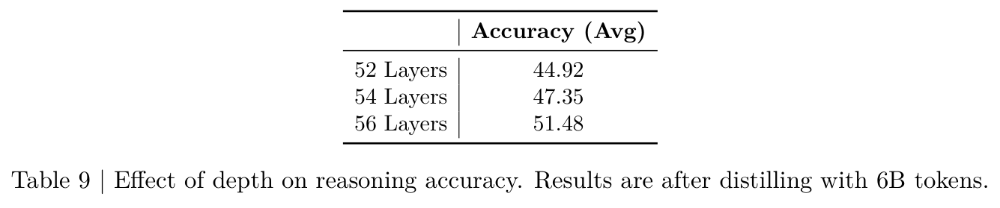
结合深度和宽度剪枝。如上所述，我们将目标模型的深度固定为 56 层，其中包含 4 个 attention 层。我们对这一 checkpoint 进行 60B token 的蒸馏（更多细节见第 4.3 节），并沿 embedding、FFN 和 Mamba 维度进一步进行宽度剪枝。我们枚举满足显存预算的所有候选剪枝架构，并按照 128k 上下文长度、batch 大小 1 下的估计显存消耗降序排列。从列表中选取前 3 个候选进行进一步评估：具体而言，在深度加宽度剪枝后，对这些候选进行 19B token 的短期知识蒸馏（KD）；我们还测试吞吐量，以选出最终架构候选。表 10 列出了前 3 个候选的架构细节，以及达到的任务表现（KD 后）和吞吐量。如表所示，候选 2 达到最佳准确率，同时仍有合理的运行性能；因此，我们采用该架构作为 Nano 2。
FFN 与 Mamba 剪枝。我们沿用 Taghibakhshi et al.（2025）的方案，对 Mamba 头数进行消融，考虑保留原始头数的 87.5% 和 93.75% 的配置。但相较于 Taghibakhshi et al.（2025）约 50% 的压缩比例，本工作探索的压缩比例较小（深度剪枝后不足 15%），因此我们发现 Mamba 头剪枝带来的收益有限，在这些情况下，只剪除 FFN 和（接下页）
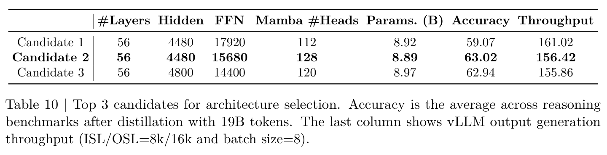
（接上页）embedding 维度，就足以在保留准确率的同时实现所需压缩。表 10 中的候选 1 和候选 2 突出了这一差异。
4.3 使用蒸馏重新训练
为恢复剪枝损失的准确率，模型继续接受训练。近期工作表明，从原始模型向剪枝模型蒸馏知识优于传统微调（Muralidharan et al., 2024；Sreenivas et al., 2024；Bercovich et al., 2024）；因此，我们采用基于 logits 的蒸馏进行继续训练，在准确率恢复阶段只使用前向 KL 散度损失（蒸馏损失形式的更多细节见 Minitron 论文（Muralidharan et al., 2024）第 3 节）。基于第 4.2 节介绍的候选选择过程，我们在一个延长阶段继续训练候选 2，细节如下，以获得最终 Nano 2 推理模型和基础模型。
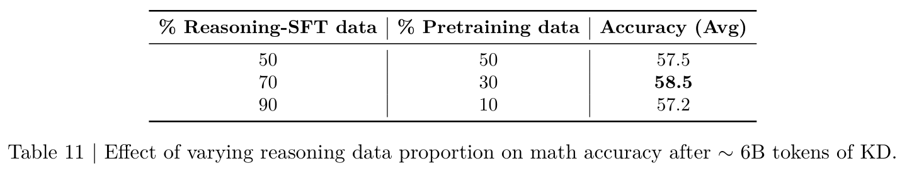
推理模型。推理模型分阶段蒸馏，逐步增加序列长度，以强化扩展推理和长上下文能力；随后进行针对性的强化学习（RL）、偏好优化和模型合并，以保留所需行为，并确保在多样任务上的稳健性。下面介绍各个阶段：
- 深度剪枝至 56 层；以 8,192 序列长度进行约 60B token 的知识蒸馏（KD）。
- 宽度剪枝，并进行 KD：
- 以 8,192 序列长度训练约 50B token。
- 以 49,152 序列长度训练约 25B token。
- 以 262,144 序列长度训练约 1B token。
- Direct Preference Optimization（DPO）。
- Group Relative Policy Optimization（GRPO）。
- 以 262,144 序列长度进行约 0.4B token 的 KD，以恢复 RL 后的下降。
- 通过 RLHF 与人类偏好对齐。
- 通过 0.5 线性插值，合并步骤 5 和步骤 6 的模型。
DPO、GRPO 和 RLHF 的更多细节见第 3 节。图 6 展示分阶段训练对不同推理基准上模型准确率的影响。这里，\(x\) 轴表示各个阶段（从上面的步骤 2 开始），\(y\) 轴表示随着训练推进在各基准上取得的得分。如图所示，DPO 和 GRPO 对增强函数调用（BFCL v3）和指令遵循（IFEval）能力至关重要，不过后者会暂时降低多任务理解（MMLU-Pro）能力，这在下一步（GRPO 后 KD）中得到恢复。最后，RLHF 增强与人类偏好的对齐（Arena-Hard），但会导致额外的基准表现下降，随后通过模型合并恢复。
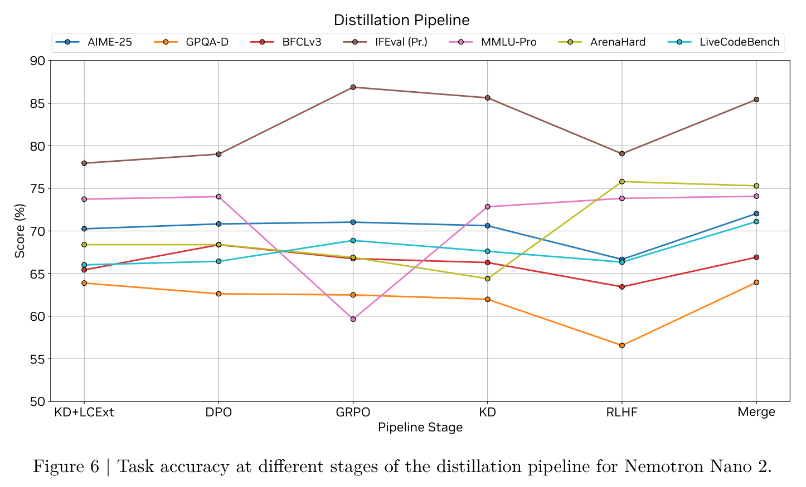
数据集：我们观察到，70% 后训练第二阶段数据（第 3.2 节）与 30% 预训练数据（第 2.2 节）的混合取得最高准确率（表 11）。对于序列长度 262,144 下的 KD，我们使用 100% 后训练第三阶段数据（第 3.2 节）。
基础模型。蒸馏分阶段进行：首先仅做深度剪枝，并使用约 120B token 进行 KD；随后进行宽度剪枝，并使用约 360B token 进行 KD（两者的序列长度均为 8,192）；最后，以序列长度 524,288 使用约 2.5B token 进行 KD，以赋予长上下文能力。
数据集：沿用 Sreenivas et al.（2024），对于序列长度分别为 8,192 和 524,288 的基础模型蒸馏，我们分别使用第 2.2 和第 2.6 节介绍的 100% 预训练数据。
4.4 结果
我们通过剪除完整层（深度）、FFN 隐藏大小和 embedding 通道，将 12B 模型有效压缩为 9B 参数，提高推理吞吐量，并使其能在 NVIDIA A10G GPU 上进行长上下文推理。Nemotron-Nano-9B-v2 保留原始模型中的 56 层。此外，embedding 通道数从 5120 剪至 4480，FFN 中间大小从 20480 剪至 15680。如图 1 和表 5、表 6 所示，在生成密集型场景中，Nemotron-Nano-9B-v2 的吞吐量比 Qwen3-8B 高 \(3\times\)–\(6\times\)，同时在（接下页）
（接上页）准确率上超过它，并在大多数基准上保持与 12B 教师模型相当的表现。
5 结论
本报告介绍了 Nemotron-Nano-9B-v2，这是一个 Mamba-Transformer 混合推理模型，相较于 Qwen3-8B 等现有最先进模型，在吞吐量最高提升 \(6\times\) 的同时，达到相当或更好的准确率。为创建 Nemotron-Nano-9B-v2，我们首先使用 20T token 预训练 Nemotron-Nano-12B-v2-Base，数据是精心构建的整理数据与合成生成数据的混合。我们通过多个 SFT、GRPO、DPO 和 RLHF 阶段对齐 Nemotron-Nano-12B-v2-Base，然后使用 Minitron 的剪枝与蒸馏压缩策略产生最终模型。通过这种压缩，Nemotron-Nano-9B-v2 可以在单张具有 22 GiB 显存的 NVIDIA A10G GPU 上，以 bfloat16 精度对最长 128k token 的上下文进行推理。我们在 HuggingFace 上开源了 Nemotron-Nano-9B-v2，以及对应的同级模型 Nemotron-Nano-9B-v2-Base 和父模型 Nemotron-Nano-12B-v2-Base，并发布了其大部分预训练与后训练数据（链接见第 1 节末尾）。
贡献者
感谢以下人员为 NVIDIA Nemotron Nano 2 作出的宝贵贡献。
数据。Abhinav Khattar, Aleksander Ficek, Arham Mehta, Ayush Dattagupta, Brandon Norick, Dan Su, Daria Gitman, Evelina Bakhturina, Igor Gitman, Ivan Moshkov, Jaehun Jung, Jane Polak Scowcroft, Jocelyn Huang, Joseph Jennings, Jupinder Parmar, Markus Kliegl, Matvei Novikov, Mehrzad Samadi, Miguel Martinez, Mohammad Shoeybi, Mostofa Patwary, Pavlo Molchanov, Pritam Gundecha, Rabeeh Karimi Mahabadi, Ranjit Rajan, Rima Shahbazyan, Sanjeev Satheesh, Sarah Yurick, Sean Narenthiran, Seungju Han, Shizhe Diao, Shrimai Prabhumoye, Shubham Toshniwal, Siddhartha Jain, Somshubra Majumdar, Syeda Nahida Akter, Vahid Noroozi, Vineeth Kalluru, Vitaly Kurin, Wasi Uddin Ahmad, Wei Du, Ximing Lu, Yejin Choi, Ying Lin.
FP8。Hua Huang, Jinze Xue, Keith Wyss, Kunlun Li, Mike Chrzanowski, Oleg Rybakov, Przemek Tredak, Tim Moon, Zhongbo Zhu.
架构。Bita Darvish Rouhani, Brandon Norick, Duncan Riach, Nidhi Bhatia, Roger Waleffe, Wonmin Byeon, Ritika Borkar, Xin Dong, Yonggan Fu.
预训练。Aarti Basant, Abhijit Paithankar, Abhinav Khattar, Deepak Narayanan, Herman Sahota, Hexin Wang, Jupinder Parmar, Mohammad Shoeybi, Mostofa Patwary, Namit Dhameja, Roger Waleffe, Russell J. Hewett, Ryan Prenger, Seonmyeong Bak.
基础设施。Alex Kondratenko, Alex Shaposhnikov, Anubhav Mandarwal, Ashwin Poojary, Dong Ahn, Gargi Prasad, Haim Elisha, Harsh Sharma, Kumar Anik, Maer Rodrigues de Melo, Ruoxi Zhang, Shelby Thomas, Stefania Alborghetti, Tony Wang.
长上下文。Deepak Narayanan, Dima Rekesh, Duncan Riach, John Kamalu, Kezhi Kong, Markus Kliegl, Roger Waleffe, Samuel Kriman.
推理。Daniel Afrimi, Helen Ngo, Keshav Santhanam, Kushan Ahmadian, Lawrence McAfee, Luis Vega, Nave Assaf, Peter Dykas, Shanmugam Ramasamy, Siddharth Singh, Tomer Asida, Vijay Korthikanti.
对齐。Adithya Renduchintala, Alexander Bukharin, Ameya Sunil Mahabaleshwarkar, Banghua Zhu, Bilal Kartal, Brian Yu, Charles Wang, Christian Munley, David Mosallanezhad, Gerald Shen, Haifeng Qian, Hayley Ross, Hoo Chang Shin, Igor Gitman, Jian Zhang, Jiaqi Zeng, Julien Veron
（对齐贡献者名单接下页。）
（接上页贡献者名单）Vialard, Junkeun Yi, Kezhi Kong, Luis Vega, Makesh Narsimhan Sreedhar, Oleksii Hrinchuk, Oleksii Kuchaiev, Peter Jin, Prasoon Varshney, Ritu Gala, Shuoyang Ding, Soumye Singhal, Tugrul Konuk, Venkat Srinivasan, Vitaly Lavrukhin, Yian Zhang, Yoshi Suhara, Zhen Dong, Zijia Chen.
压缩。Aditya Malte, Akhiad Bercovich, Akshay Hazare, Ali Taghibakhshi, Ameya Sunil Mahabaleshwarkar, Ashwath Aithal, Banghua Zhu, Daniel Korzekwa, Deepak Narayanan, Gerald Shen, Hayley Ross, Julien Veron Vialard, Luis Vega, Marcin Chochowski, Mostofa Patwary, Nima Tajbakhsh, Oluwatobi Olabiyi, Pavlo Molchanov, Ran El-Yaniv, Roger Waleffe, Saurav Muralidharan, Sepehr Sameni, Sharath Turuvekere Sreenivas, Tomer Asida, Yashaswi Karnati, Yian Zhang, Yoshi Suhara, Zijia Chen.
软件支持。Abhijit Khairnar, Adithya Renduchintala, Ali Taghibakhshi, Anna Shors, Ashwath Aithal, Balaram Buddharaju, Bobby Chen, Charlie Truong, Deepak Narayanan, Dmytro Pykhtar, Duncan Riach, Gerald Shen, Helen Ngo, Jared Casper, Jimmy Zhang, Keshav Santhanam, Kezhi Kong, Lawrence McAfee, Luis Vega, Nima Tajbakhsh, Parth Chadha, Piotr Bialecki, Prashant Gaikwad, Rajen Patel, Roger Waleffe, Sahil Jain, Terry Kong, Tyler Poon, Vijay Korthikanti, Vikram Fugro, Yoshi Suhara, Zhiyu Li.
评估与安全。Christopher Parisien, Dan Su, Daniel Rohrer, Eileen Long, Erick Galinkin, Helen Ngo, Katherine Luna, Keshav Santhanam, Kezhi Kong, Leon Derczynski, Marta Stepniewska-Dziubinska, Meriem Boubdir, Michal Bien, Michael Boone, Michael Evans, Michal Bien, Michal Zawalski, Pablo Ribalta, Piotr Januszewski, Pradeep Thalasta, Sanjeev Satheesh, Shaona Ghosh, Tomasz Hliwiak.
法律与合规。Barnaby Simkin, Chetan Mungekar, Dina Yared, Iain Cunningham, Katherine Cheung, Laya Sleiman, Meredith Price, Michael Boone, Nikki Pope, Ria Cheruvu, Saori Kaji.
市场推广。Amelia Barton, Chris Alexiuk, Mark Cai, Nirmal Kumar Juluru, Shreya Gopal.
项目管理。Alejandra Rico, Amy Shen, Ann Guan, Ashton Sharabiani, Elliott Ning, Krzysztof Pawelec, Negar Habibi, Twinkle Vashishth.
产品。Arun Venkatesan, Chintan Patel, Chris Alexiuk, Joey Conway, Padmavathy Subramanian, Udi Karpas.
领导团队。Andrew Tao, Boris Ginsburg, Bryan Catanzaro, Eric Chung, Jan Kautz, Joey Conway, Jonathan Cohen, Kari Briski, Mohammad Shoeybi, Mostofa Patwary, Oleksii Kuchaiev, Pavlo Molchanov.
还感谢 vLLM 团队的 Chen Zhang、Michael Goin 和 Thomas Parnell 提供帮助。
参考文献
Gretel 合成安全对齐数据集, 12 2024. URL https://huggingface.co/datasets/gretelai/gretel-safety-alignment-en-v1.
Marah Abdin, Jyoti Aneja, Harkirat Behl, Sébastien Bubeck, Ronen Eldan, Suriya Gunasekar, Michael Harrison, Russell J Hewett, Mojan Javaheripi, Piero Kauffmann, 等 Phi-4 技术报告. arXiv 预印本 arXiv:2412.08905, 2024.
Wasi Uddin Ahmad, Aleksander Ficek, Mehrzad Samadi, Jocelyn Huang, Vahid Noroozi, Somshubra Majumdar, and Boris Ginsburg. OpenCodeInstruct：面向代码 LLM 的大规模指令微调数据集. arXiv 预印本 arXiv:2504.04030, 2025a.
Wasi Uddin Ahmad, Sean Narenthiran, Somshubra Majumdar, Aleksander Ficek, Siddhartha Jain, Jocelyn Huang, Vahid Noroozi, and Boris Ginsburg. OpenCodeReasoning：推动竞赛编程的数据蒸馏. arXiv 预印本 arXiv:2504.01943, 2025b.
Joshua Ainslie, James Lee-Thorp, Michiel de Jong, Yury Zemlyanskiy, Federico Lebrón, and Sumit Sanghai. GQA：从多头 checkpoint 训练广义多查询 Transformer 模型, 2023. URL https://arxiv.org/abs/2305.13245.
Syeda Nahida Akter, Shrimai Prabhumoye, John Kamalu, Sanjeev Satheesh, Eric Nyberg, Mostofa Patwary, Mohammad Shoeybi, and Bryan Catanzaro. MIND：用于 LLM 预训练的融入数学知识的合成对话, 2024. URL https://arxiv.org/abs/2410.12881.
Loubna Ben Allal, Anton Lozhkov, Elie Bakouch, Gabriel Martín Blázquez, Guilherme Penedo, Lewis Tunstall, Andrés Marafioti, Hynek Kydlíček, Agustín Piqueres Lajarín, Vaibhav Srivastav, Joshua Lochner, Caleb Fahlgren, Xuan-Son Nguyen, Clémentine Fourrier, Ben Burtenshaw, Hugo Larcher, Haojun Zhao, Cyril Zakka, Mathieu Morlon, Colin Raffel, Leandro von Werra, and Thomas Wolf. SmolLM2：小模型做大事——以数据为中心的小语言模型训练, 2025. URL https://arxiv.org/abs/2502.02737.
Zeyuan Allen-Zhu and Yuanzhi Li. 语言模型的物理学：第 3.1 部分，知识存储与提取, 2024. URL https://arxiv.org/abs/2309.14316.
Jacob Austin, Augustus Odena, Maxwell Nye, Maarten Bosma, Henryk Michalewski, David Dohan, Ellen Jiang, Carrie Cai, Michael Terry, Quoc Le, and Charles Sutton. 使用 LLM 进行程序合成, 2021. URL https://arxiv.org/abs/2108.07732.
Shuai Bai, Keqin Chen, Xuejing Liu, Jialin Wang, Wenbin Ge, Sibo Song, Kai Dang, Peng Wang, Shijie Wang, Jun Tang, Humen Zhong, Yuanzhi Zhu, Mingkun Yang, Zhaohai Li, Jianqiang Wan, Pengfei Wang, Wei Ding, Zheren Fu, Yiheng Xu, Jiabo Ye, Xi Zhang, Tianbao Xie, Zesen Cheng, Hang Zhang, Zhibo Yang, Haiyang Xu, and Junyang Lin. Qwen2.5-VL 技术报告, 2025. URL https://arxiv.org/abs/2502.13923.
Adrien Barbaresi. Trafilatura：用于文本发现与提取的网页抓取库和命令行工具. In Proceedings of the Joint Conference of the 59th Annual Meeting of the Association for Computational Linguistics and the 11th International Joint Conference on Natural Language Processing: System Demonstrations, 页 122–131. Association for Computational Linguistics, 2021. URL https://aclanthology.org/2021.acl-demo.15.
Akhiad Bercovich, Tomer Ronen, Talor Abramovich, Nir Ailon, Nave Assaf, Mohammad Dabbah, Ido Galil, Amnon Geifman, Yonatan Geifman, Izhak Golan, Netanel Haber, Ehud Karpas, Roi Koren, Itay Levy, Pavlo Molchanov, Shahar Mor, Zach Moshe, Najeeb Nabwani, Omri Puny,
（最后一条文献的作者名单接下页。）
参考文献（续）
Ran Rubin, Itamar Schen, Ido Shahaf, Oren Tropp, Omer Ullman Argov, Ran Zilberstein, and Ran El-Yaniv. Puzzle：面向推理优化 LLM 的基于蒸馏的 NAS, 2024. URL https://arxiv.org/abs/2411.19146.
Akhiad Bercovich, Itay Levy, Izik Golan, Mohammad Dabbah, Ran El-Yaniv, Omri Puny, Ido Galil, Zach Moshe, Tomer Ronen, Najeeb Nabwani, Ido Shahaf, Oren Tropp, Ehud Karpas, Ran Zilberstein, Jiaqi Zeng, Soumye Singhal, Alexander Bukharin, Yian Zhang, Tugrul Konuk, Gerald Shen, Ameya Sunil Mahabaleshwarkar, Bilal Kartal, Yoshi Suhara, Olivier Delalleau, Zijia Chen, Zhilin Wang, David Mosallanezhad, Adi Renduchintala, Haifeng Qian, Dima Rekesh, Fei Jia, Somshubra Majumdar, Vahid Noroozi, Wasi Uddin Ahmad, Sean Narenthiran, Aleksander Ficek, Mehrzad Samadi, Jocelyn Huang, Siddhartha Jain, Igor Gitman, Ivan Moshkov, Wei Du, Shubham Toshniwal, George Armstrong, Branislav Kisacanin, Matvei Novikov, Daria Gitman, Evelina Bakhturina, Jane Polak Scowcroft, John Kamalu, Dan Su, Kezhi Kong, Markus Kliegl, Rabeeh Karimi, Ying Lin, Sanjeev Satheesh, Jupinder Parmar, Pritam Gundecha, Brandon Norick, Joseph Jennings, Shrimai Prabhumoye, Syeda Nahida Akter, Mostofa Patwary, Abhinav Khattar, Deepak Narayanan, Roger Waleffe, Jimmy Zhang, Bor-Yiing Su, Guyue Huang, Terry Kong, Parth Chadha, Sahil Jain, Christine Harvey, Elad Segal, Jining Huang, Sergey Kashirsky, Robert McQueen, Izzy Putterman, George Lam, Arun Venkatesan, Sherry Wu, Vinh Nguyen, Manoj Kilaru, Andrew Wang, Anna Warno, Abhilash Somasamudramath, Sandip Bhaskar, Maka Dong, Nave Assaf, Shahar Mor, Omer Ullman Argov, Scot Junkin, Oleksandr Romanenko, Pedro Larroy, Monika Katariya, Marco Rovinelli, Viji Balas, Nicholas Edelman, Anahita Bhiwandiwalla, Muthu Subramaniam, Smita Ithape, Karthik Ramamoorthy, Yuting Wu, Suguna Varshini Velury, Omri Almog, Joyjit Daw, Denys Fridman, Erick Galinkin, Michael Evans, Katherine Luna, Leon Derczynski, Nikki Pope, Eileen Long, Seth Schneider, Guillermo Siman, Tomasz Grzegorzek, Pablo Ribalta, Monika Katariya, Joey Conway, Trisha Saar, Ann Guan, Krzysztof Pawelec, Shyamala Prayaga, Oleksii Kuchaiev, Boris Ginsburg, Oluwatobi Olabiyi, Kari Briski, Jonathan Cohen, Bryan Catanzaro, Jonah Alben, Yonatan Geifman, Eric Chung, and Chris Alexiuk. Llama-Nemotron：高效推理模型, 2025a. URL https://arxiv.org/abs/2505.00949.
Akhiad Bercovich, Itay Levy, Izik Golan, Mohammad Dabbah, Ran El-Yaniv, Omri Puny, Ido Galil, Zach Moshe, Tomer Ronen, Najeeb Nabwani, 等 Llama-Nemotron：高效推理模型. arXiv 预印本 arXiv:2505.00949, 2025b.
Janek Bevendorff, Benno Stein, Matthias Hagen, and Martin Potthast. Elastic ChatNoir：用于 ClueWeb 和 Common Crawl 的搜索引擎. In Leif Azzopardi, Allan Hanbury, Gabriella Pasi, and Benjamin Piwowarski （编）, Advances in Information Retrieval. 40th European Conference on IR Research (ECIR 2018), Lecture Notes in Computer Science, Berlin Heidelberg New York, March 2018. Springer.
Yonatan Bisk, Rowan Zellers, Ronan Le Bras, Jianfeng Gao, and Yejin Choi. PIQA：用自然语言进行物理常识推理, 2019. URL https://arxiv.org/abs/1911.11641.
Andrei Z Broder. 识别和过滤近乎重复的文档. In Annual symposium on combinatorial pattern matching, 页 1–10. Springer, 2000.
Mark Chen, Jerry Tworek, Heewoo Jun, Qiming Yuan, Henrique Ponde de Oliveira Pinto, Jared Kaplan, 等 评估使用代码训练的 LLM, 2021. URL https://arxiv.org/abs/2107.03374.
Paul F. Christiano, Jan Leike, Tom B. Brown, Miljan Martic, Shane Legg, and Dario Amodei. 从人类偏好进行深度强化学习. In Advances in Neural Information Processing Systems (NeurIPS), NIPS ’17, 2017.
参考文献（续）
Peter Clark, Isaac Cowhey, Oren Etzioni, Tushar Khot, Ashish Sabharwal, Carissa Schoenick, and Oyvind Tafjord. 认为你已解决问答问题？试试 ARC，即 AI2 推理挑战. ArXiv, abs/1803.05457, 2018.
Karl Cobbe, Vineet Kosaraju, Mohammad Bavarian, Mark Chen, Heewoo Jun, Lukasz Kaiser, Matthias Plappert, Jerry Tworek, Jacob Hilton, Reiichiro Nakano, Christopher Hesse, and John Schulman. 训练验证器以求解数学应用题, 2021. URL https://arxiv.org/abs/2110.14168.
Tri Dao and Albert Gu. Transformer 是 SSM：通过结构化状态空间对偶构建广义模型与高效算法, 2024. URL https://arxiv.org/abs/2405.21060.
Gemma Team @ Google DeepMind. Gemma 3 技术报告, 2025. URL https://arxiv.org/abs/2503.19786.
DeepSeek-AI. DeepSeek-R1：通过强化学习激发 LLM 的推理能力, 2025a. URL https://arxiv.org/abs/2501.12948.
DeepSeek-AI. DeepSeek-V3 技术报告, 2025b. URL https://arxiv.org/abs/2412.19437.
István Endrédy and Attila Novák. 更有效的样板内容去除——goldminer 算法. Polibits, 48:79–83, 12 2013. doi: 10.17562/PB-48-10.
Steven Feng, Shrimai Prabhumoye, Kezhi Kong, Dan Su, Mostofa Patwary, Mohammad Shoeybi, and Bryan Catanzaro. 最大化数据潜力：通过两阶段预训练提高 LLM 准确率, 2024. URL https://arxiv.org/abs/2412.15285.
Shaona Ghosh, Prasoon Varshney, Makesh Narsimhan Sreedhar, Aishwarya Padmakumar, Traian Rebedea, Jibin Rajan Varghese, and Christopher Parisien. AEGIS2.0：用于 LLM 安全护栏对齐的多样化 AI 安全数据集与风险分类体系. In Luis Chiruzzo, Alan Ritter, and Lu Wang （编）, Proceedings of the 2025 Conference of the Nations of the Americas Chapter of the Association for Computational Linguistics: Human Language Technologies (Volume 1: Long Papers), 页 5992–6026, Albuquerque, New Mexico, April 2025. Association for Computational Linguistics. ISBN 979-8-89176-189-6. doi: 10.18653/v1/2025.naacl-long.306. URL https://aclanthology.org/2025.naacl-long.306/.
Xiaotian Han, Yiren Jian, Xuefeng Hu, Haogeng Liu, Yiqi Wang, Qihang Fan, Yuang Ai, Huaibo Huang, Ran He, Zhenheng Yang, and Quanzeng You. Infimm-webmath-40b：推进多模态预训练以增强数学推理, 2024. URL https://arxiv.org/abs/2409.12568.
Adib Hasan, Ileana Rugina, and Alex Wang. 通过剪枝实现保护：无需微调即可增强对齐 LLM 的抗越狱能力. arXiv 预印本 arXiv:2401.10862, 2024.
Dan Hendrycks, Collin Burns, Steven Basart, Andy Zou, Mantas Mazeika, Dawn Song, and Jacob Steinhardt. 衡量大规模多任务语言理解, 2021a. URL https://arxiv.org/abs/2009.03300.
Dan Hendrycks, Collin Burns, Saurav Kadavath, Akul Arora, Steven Basart, Eric Tang, Dawn Song, and Jacob Steinhardt. 使用 MATH 数据集衡量数学问题求解能力, 2021b. URL https://arxiv.org/abs/2103.03874.
Cheng-Ping Hsieh, Simeng Sun, Samuel Kriman, Shantanu Acharya, Dima Rekesh, Fei Jia, Yang Zhang, and Boris Ginsburg. RULER：长上下文语言模型的真实上下文长度是多少？ arXiv 预印本 arXiv:2404.06654, 2024.
参考文献（续）
Shengding Hu, Yuge Tu, Xu Han, Ganqu Cui, Chaoqun He, Weilin Zhao, Xiang Long, Zhi Zheng, Yewei Fang, Yuxiang Huang, Xinrong Zhang, Zhen Leng Thai, Chongyi Wang, Yuan Yao, Chenyang Zhao, Jie Zhou, Jie Cai, Zhongwu Zhai, Ning Ding, Chao Jia, Guoyang Zeng, dahai li, Zhiyuan Liu, and Maosong Sun. MiniCPM：通过可扩展训练策略揭示小语言模型的潜力. In First Conference on Language Modeling, 2024. URL https://openreview.net/forum?id=3X2L2TFr0f.
Siming Huang, Tianhao Cheng, J. K. Liu, Jiaran Hao, Liuyihan Song, Yang Xu, J. Yang, Jiaheng Liu, Chenchen Zhang, Linzheng Chai, Ruifeng Yuan, Zhaoxiang Zhang, Jie Fu, Qian Liu, Ge Zhang, Zili Wang, Yuan Qi, Yinghui Xu, and Wei Chu. OpenCoder：顶级代码 LLM 的开放配方, 2025. URL https://arxiv.org/abs/2411.04905.
Piotr Indyk and Rajeev Motwani. 近似最近邻：迈向消除维度灾难. In Proceedings of the thirtieth annual ACM symposium on Theory of computing, 页 604–613, 1998.
Naman Jain, King Han, Alex Gu, Wen-Ding Li, Fanjia Yan, Tianjun Zhang, Sida Wang, Armando Solar-Lezama, Koushik Sen, and Ion Stoica. LiveCodeBench：全面、无污染的代码 LLM 评估. arXiv 预印本 arXiv:2403.07974, 2024.
Tianle Li, Wei-Lin Chiang, Evan Frick, Lisa Dunlap, Banghua Zhu, Joseph E. Gonzalez, and Ion Stoica. 从实时数据到高质量基准：Arena-Hard 流水线, April 2024a. URL https://lmsys.org/blog/2024-04-19-arena-hard/.
Xuehai Li, Zi Ye, Xiaoxin Zhang, Xinshi Lu, Yingqiang Xia, Bairu Wu, Shihan Dong, Qipeng Jin, Jialu Wang, Heng Ji, 等 WildChat：100 万条真实场景中的 ChatGPT 交互日志. arXiv 预印本 arXiv:2405.01470, 2024b.
Opher Lieber, Barak Lenz, Hofit Bata, Gal Cohen, Jhonathan Osin, Itay Dalmedigos, Erez Safahi, Shaked Meirom, Yonatan Belinkov, Shai Shalev-Shwartz, Omri Abend, Raz Alon, Tomer Asida, Amir Bergman, Roman Glozman, Michael Gokhman, Avashalom Manevich, Nir Ratner, Noam Rozen, Erez Shwartz, Mor Zusman, and Yoav Shoham. Jamba：Transformer-Mamba 混合语言模型, 2024. URL https://arxiv.org/abs/2403.19887.
Hunter Lightman, Vineet Kosaraju, Yura Burda, Harri Edwards, Bowen Baker, Teddy Lee, Jan Leike, John Schulman, Ilya Sutskever, and Karl Cobbe. 让我们逐步验证. arXiv 预印本 arXiv:2305.20050, 2023.
Wang Ling, Dani Yogatama, Chris Dyer, and Phil Blunsom. 通过推理说明生成进行程序归纳：学习求解并解释代数应用题. arXiv 预印本 arXiv:1705.04146, 2017.
Jian Liu, Leyang Cui, Hanmeng Liu, Dandan Huang, Yile Wang, and Yue Zhang. LogiQA：用于包含逻辑推理的机器阅读理解的挑战数据集. arXiv 预印本 arXiv:2007.08124, 2020.
Jiawei Liu, Chunqiu Steven Xia, Yuyao Wang, and Lingming Zhang. ChatGPT 生成的代码真的正确吗？严格评估 LLM 的代码生成能力. arXiv 预印本 arXiv:2305.01210, 2023. doi: https://doi.org/10.48550/arXiv.2305.01210. URL https://arxiv.org/abs/2305.01210.
Zuxin Liu 等 ToolACE：赢得 LLM 函数调用得分. arXiv 预印本 arXiv:2409.00920, 2024.
参考文献（续）
Anton Lozhkov, Raymond Li, Loubna Ben Allal, Federico Cassano, Joel Lamy-Poirier, Nouamane Tazi, Ao Tang, Dmytro Pykhtar, Jiawei Liu, Yuxiang Wei, Tianyang Liu, Max Tian, Denis Kocetkov, Arthur Zucker, Younes Belkada, Zijian Wang, Qian Liu, Dmitry Abulkhanov, Indraneil Paul, Zhuang Li, Wen-Ding Li, Megan Risdal, Jia Li, Jian Zhu, Terry Yue Zhuo, Evgenii Zheltonozhskii, Nii Osae Osae Dade, Wenhao Yu, Lucas Krauß, Naman Jain, Yixuan Su, Xuanli He, Manan Dey, Edoardo Abati, Yekun Chai, Niklas Muennighoff, Xiangru Tang, Muhtasham Oblokulov, Christopher Akiki, Marc Marone, Chenghao Mou, Mayank Mishra, Alex Gu, Binyuan Hui, Tri Dao, Armel Zebaze, Olivier Dehaene, Nicolas Patry, Canwen Xu, Julian McAuley, Han Hu, Torsten Scholak, Sebastien Paquet, Jennifer Robinson, Carolyn Jane Anderson, Nicolas Chapados, Mostofa Patwary, Nima Tajbakhsh, Yacine Jernite, Carlos Muñoz Ferrandis, Lingming Zhang, Sean Hughes, Thomas Wolf, Arjun Guha, Leandro von Werra, and Harm de Vries. StarCoder 2 与 The Stack v2：下一代, 2024. URL https://arxiv.org/abs/2402.19173.
Weidi Luo, Siyuan Ma, Xiaogeng Liu, Xiaoyu Guo, and Chaowei Xiao. JailBreakV：评估多模态 LLM 抗越狱攻击稳健性的基准. arXiv 预印本 arXiv:2404.03027, 2024.
Rabeeh Karimi Mahabadi, Sanjeev Satheesh, Shrimai Prabhumoye, Mostofa Patwary, Mohammad Shoeybi, and Bryan Catanzaro. Nemotron-CC-Math：1330 亿 token 规模的高质量数学预训练数据集, 2025. URL https://arxiv.org/abs/2508.15096.
Somshubra Majumdar, Vahid Noroozi, Mehrzad Samadi, Sean Narenthiran, Aleksander Ficek, Wasi Uddin Ahmad, Jocelyn Huang, Jagadeesh Balam, and Boris Ginsburg. Genetic Instruct：扩大面向 LLM 的编程指令合成生成规模. arXiv 预印本 arXiv:2407.21077, 2024.
Llama Team @ Meta. Llama 3 模型家族, 2024. URL https://arxiv.org/abs/2407.21783.
Todor Mihaylov, Peter Clark, Tushar Khot, and Ashish Sabharwal. 一套盔甲能导电吗？用于开放书本问答的新数据集, 2018. URL https://arxiv.org/abs/1809.02789.
Ivan Moshkov, Darragh Hanley, Ivan Sorokin, Shubham Toshniwal, Christof Henkel, Benedikt Schifferer, Wei Du, and Igor Gitman. AIMO-2 获胜方案：使用 OpenMathReasoning 数据集构建先进数学推理模型. arXiv 预印本 arXiv:2504.16891, 2025.
Saurav Muralidharan, Sharath Turuvekere Sreenivas, Raviraj Joshi, Marcin Chochowski, Mostofa Patwary, Mohammad Shoeybi, Bryan Catanzaro, Jan Kautz, and Pavlo Molchanov. 通过剪枝和知识蒸馏构建紧凑语言模型, 2024. URL https://arxiv.org/abs/2407.14679.
NVIDIA. Nemotron-4 340B 技术报告, 2024. URL https://arxiv.org/abs/2406.11704.
NVIDIA. Nemotron-H：准确、高效的 Mamba-Transformer 混合模型家族, 2025. URL https://arxiv.org/abs/2504.03624.
Long Ouyang, Jeffrey Wu, Xu Jiang, Diogo Almeida, Carroll Wainwright, Pamela Mishkin, Chong Zhang, Sandhini Agarwal, Katarina Slama, Alex Ray, John Schulman, Jacob Hilton, Fraser Kelton, Luke Miller, Maddie Simens, Amanda Askell, Peter Welinder, Paul Christiano, Jan Leike, and Ryan Lowe. 通过人类反馈训练语言模型遵循指令. arXiv 预印本 arXiv:2203.02155, 2022.
参考文献（续）
Jupinder Parmar, Shrimai Prabhumoye, Joseph Jennings, Mostofa Patwary, Sandeep Subramanian, Dan Su, Chen Zhu, Deepak Narayanan, Aastha Jhunjhunwala, Ayush Dattagupta, Vibhu Jawa, Jiwei Liu, Ameya Mahabaleshwarkar, Osvald Nitski, Annika Brundyn, James Maki, Miguel Martinez, Jiaxuan You, John Kamalu, Patrick LeGresley, Denys Fridman, Jared Casper, Ashwath Aithal, Oleksii Kuchaiev, Mohammad Shoeybi, Jonathan Cohen, and Bryan Catanzaro. Nemotron-4 15B 技术报告. arXiv 预印本 arXiv:2402.16819, 2024. URL https://arxiv.org/abs/2402.16819.
Keiran Paster, Marco Dos Santos, Zhangir Azerbayev, and Jimmy Ba. OpenWebMath：高质量数学网页文本的开放数据集, 2023.
Guilherme Penedo, Hynek Kydlíček, Vinko Sabolčec, Bettina Messmer, Negar Foroutan, Amir Hossein Kargaran, Colin Raffel, Martin Jaggi, Leandro Von Werra, and Thomas Wolf. FineWeb2：用一条流水线扩展所有语言——使预训练数据处理适应每种语言, 2025. URL https://arxiv.org/abs/2506.20920.
Long Phan, Alice Gatti, Ziwen Han, Nathaniel Li, Josephina Hu, Hugh Zhang, Chen Bo Calvin Zhang, Mohamed Shaaban, John Ling, Sean Shi, Michael Choi, Anish Agrawal, Arnav Chopra, Adam Khoja, Ryan Kim, Richard Ren, Jason Hausenloy, Oliver Zhang, Mantas Mazeika, Dmitry Dodonov, Tung Nguyen, Jaeho Lee, Daron Anderson, Mikhail Doroshenko, Alun Cennyth Stokes, Mobeen Mahmood, Oleksandr Pokutnyi, Oleg Iskra, Jessica P. Wang, John-Clark Levin, Mstyslav Kazakov, Fiona Feng, Steven Y. Feng, Haoran Zhao, Michael Yu, Varun Gangal, Chelsea Zou, Zihan Wang, Serguei Popov, Robert Gerbicz, Geoff Galgon, Johannes Schmitt, Will Yeadon, Yongki Lee, Scott Sauers, Alvaro Sanchez, Fabian Giska, Marc Roth, Søren Riis, Saiteja Utpala, Noah Burns, Gashaw M. Goshu, Mohinder Maheshbhai Naiya, Chidozie Agu, Zachary Giboney, Antrell Cheatom, Francesco Fournier-Facio, Sarah-Jane Crowson, Lennart Finke, Zerui Cheng, Jennifer Zampese, Ryan G. Hoerr, Mark Nandor, Hyunwoo Park, Tim Gehrunger, Jiaqi Cai, Ben McCarty, Alexis C Garretson, Edwin Taylor, Damien Sileo, Qiuyu Ren, Usman Qazi, Lianghui Li, Jungbae Nam, John B. Wydallis, Pavel Arkhipov, Jack Wei Lun Shi, Aras Bacho, Chris G. Willcocks, Hangrui Cao, Sumeet Motwani, Emily de Oliveira Santos, Johannes Veith, Edward Vendrow, Doru Cojoc, Kengo Zenitani, Joshua Robinson, Longke Tang, Yuqi Li, Joshua Vendrow, Natanael Wildner Fraga, Vladyslav Kuchkin, Andrey Pupasov Maksimov, Pierre Marion, Denis Efremov, Jayson Lynch, Kaiqu Liang, Aleksandar Mikov, Andrew Gritsevskiy, Julien Guillod, Gözdenur Demir, Dakotah Martinez, Ben Pageler, Kevin Zhou, Saeed Soori, Ori Press, Henry Tang, Paolo Rissone, Sean R. Green, Lina Brüssel, Moon Twayana, Aymeric Dieuleveut, Joseph Marvin Imperial, Ameya Prabhu, Jinzhou Yang, Nick Crispino, Arun Rao, Dimitri Zvonkine, Gabriel Loiseau, Mikhail Kalinin, Marco Lukas, Ciprian Manolescu, Nate Stambaugh, Subrata Mishra, Tad Hogg, Carlo Bosio, Brian P Coppola, Julian Salazar, Jaehyeok Jin, Rafael Sayous, Stefan Ivanov, Philippe Schwaller, Shaipranesh Senthilkuma, Andres M Bran, Andres Algaba, Kelsey Van den Houte, Lynn Van Der Sypt, Brecht Verbeken, David Noever, Alexei Kopylov, Benjamin Myklebust, Bikun Li, Lisa Schut, Evgenii Zheltonozhskii, Qiaochu Yuan, Derek Lim, Richard Stanley, Tong Yang, John Maar, Julian Wykowski, Martí Oller, Anmol Sahu, Cesare Giulio Ardito, Yuzheng Hu, Ariel Ghislain Kemogne Kamdoum, Alvin Jin, Tobias Garcia Vilchis, Yuexuan Zu, Martin Lackner, James Koppel, Gongbo Sun, Daniil S. Antonenko, Steffi Chern, Bingchen Zhao, Pierrot Arsene, Joseph M Cavanagh, Daofeng Li, Jiawei Shen, Donato Crisostomi, Wenjin Zhang, Ali Dehghan, Sergey Ivanov, David Perrella, Nurdin Kaparov, Allen Zang, Ilia Sucholutsky, Arina Kharlamova, Daniil Orel, Vladislav Poritski, Shalev Ben-David, Zachary Berger, Parker Whitfill, Michael Foster, Daniel Munro, Linh Ho, Shankar Sivarajan, Dan Bar Hava, Aleksey Kuchkin, David Holmes, Alexandra Rodriguez-Romero, Frank Sommerhage, Anji Zhang, Richard Moat, Keith Schneider, Zakayo Kazibwe, Don Clarke, Dae Hyun Kim, Felipe Meneguitti Dias, Sara Fish, Veit Elser, Tobias Kreiman, Victor Efren Guadarrama Vilchis, Immo Klose, Ujjwala Anantheswaran, Adam Zweiger,
（Humanity’s Last Exam 的作者名单接下页，题名与出版信息见原文第 34 页。）
参考文献（续）
Kaivalya Rawal, Jeffery Li, Jeremy Nguyen, Nicolas Daans, Haline Heidinger, Maksim Radionov, Václav Rozhoň, Vincent Ginis, Christian Stump, Niv Cohen, Rafał Poświata, Josef Tkadlec, Alan Goldfarb, Chenguang Wang, Piotr Padlewski, Stanislaw Barzowski, Kyle Montgomery, Ryan Stendall, Jamie Tucker-Foltz, Jack Stade, T. Ryan Rogers, Tom Goertzen, Declan Grabb, Abhishek Shukla, Alan Givré, John Arnold Ambay, Archan Sen, Muhammad Fayez Aziz, Mark H Inlow, Hao He, Ling Zhang, Younesse Kaddar, Ivar Ängquist, Yanxu Chen, Harrison K Wang, Kalyan Ramakrishnan, Elliott Thornley, Antonio Terpin, Hailey Schoelkopf, Eric Zheng, Avishy Carmi, Ethan D. L. Brown, Kelin Zhu, Max Bartolo, Richard Wheeler, Martin Stehberger, Peter Bradshaw, JP Heimonen, Kaustubh Sridhar, Ido Akov, Jennifer Sandlin, Yury Makarychev, Joanna Tam, Hieu Hoang, David M. Cunningham, Vladimir Goryachev, Demosthenes Patramanis, Michael Krause, Andrew Redenti, David Aldous, Jesyin Lai, Shannon Coleman, Jiangnan Xu, Sangwon Lee, Ilias Magoulas, Sandy Zhao, Ning Tang, Michael K. Cohen, Orr Paradise, Jan Hendrik Kirchner, Maksym Ovchynnikov, Jason O. Matos, Adithya Shenoy, Michael Wang, Yuzhou Nie, Anna Sztyber-Betley, Paolo Faraboschi, Robin Riblet, Jonathan Crozier, Shiv Halasyamani, Shreyas Verma, Prashant Joshi, Eli Meril, Ziqiao Ma, Jérémy Andréoletti, Raghav Singhal, Jacob Platnick, Volodymyr Nevirkovets, Luke Basler, Alexander Ivanov, Seri Khoury, Nils Gustafsson, Marco Piccardo, Hamid Mostaghimi, Qijia Chen, Virendra Singh, Tran Quoc Khánh, Paul Rosu, Hannah Szlyk, Zachary Brown, Himanshu Narayan, Aline Menezes, Jonathan Roberts, William Alley, Kunyang Sun, Arkil Patel, Max Lamparth, Anka Reuel, Linwei Xin, Hanmeng Xu, Jacob Loader, Freddie Martin, Zixuan Wang, Andrea Achilleos, Thomas Preu, Tomek Korbak, Ida Bosio, Fereshteh Kazemi, Ziye Chen, Biró Bálint, Eve J. Y. Lo, Jiaqi Wang, Maria Inês S. Nunes, Jeremiah Milbauer, M Saiful Bari, Zihao Wang, Behzad Ansarinejad, Yewen Sun, Stephane Durand, Hossam Elgnainy, Guillaume Douville, Daniel Tordera, George Balabanian, Hew Wolff, Lynna Kvistad, Hsiaoyun Milliron, Ahmad Sakor, Murat Eron, Andrew Favre D. O., Shailesh Shah, Xiaoxiang Zhou, Firuz Kamalov, Sherwin Abdoli, Tim Santens, Shaul Barkan, Allison Tee, Robin Zhang, Alessandro Tomasiello, G. Bruno De Luca, Shi-Zhuo Looi, Vinh-Kha Le, Noam Kolt, Jiayi Pan, Emma Rodman, Jacob Drori, Carl J Fossum, Niklas Muennighoff, Milind Jagota, Ronak Pradeep, Honglu Fan, Jonathan Eicher, Michael Chen, Kushal Thaman, William Merrill, Moritz Firsching, Carter Harris, Stefan Ciobâcă, Jason Gross, Rohan Pandey, Ilya Gusev, Adam Jones, Shashank Agnihotri, Pavel Zhelnov, Mohammadreza Mofayezi, Alexander Piperski, David K. Zhang, Kostiantyn Dobarskyi, Roman Leventov, Ignat Soroko, Joshua Duersch, Vage Taamazyan, Andrew Ho, Wenjie Ma, William Held, Ruicheng Xian, Armel Randy Zebaze, Mohanad Mohamed, Julian Noah Leser, Michelle X Yuan, Laila Yacar, Johannes Lengler, Katarzyna Olszewska, Claudio Di Fratta, Edson Oliveira, Joseph W. Jackson, Andy Zou, Muthu Chidambaram, Timothy Manik, Hector Haffenden, Dashiell Stander, Ali Dasouqi, Alexander Shen, Bita Golshani, David Stap, Egor Kretov, Mikalai Uzhou, Alina Borisovna Zhidkovskaya, Nick Winter, Miguel Orbegozo Rodriguez, Robert Lauff, Dustin Wehr, Colin Tang, Zaki Hossain, Shaun Phillips, Fortuna Samuele, Fredrik Ekström, Angela Hammon, Oam Patel, Faraz Farhidi, George Medley, Forough Mohammadzadeh, Madellene Peñaflor, Haile Kassahun, Alena Friedrich, Rayner Hernandez Perez, Daniel Pyda, Taom Sakal, Omkar Dhamane, Ali Khajegili Mirabadi, Eric Hallman, Kenchi Okutsu, Mike Battaglia, Mohammad Maghsoudimehrabani, Alon Amit, Dave Hulbert, Roberto Pereira, Simon Weber, Handoko, Anton Peristyy, Stephen Malina, Mustafa Mehkary, Rami Aly, Frank Reidegeld, Anna-Katharina Dick, Cary Friday, Mukhwinder Singh, Hassan Shapourian, Wanyoung Kim, Mariana Costa, Hubeyb Gurdogan, Harsh Kumar, Chiara Ceconello, Chao Zhuang, Haon Park, Micah Carroll, Andrew R. Tawfeek, Stefan Steinerberger, Daattavya Aggarwal, Michael Kirchhof, Linjie Dai, Evan Kim, Johan Ferret, Jainam Shah, Yuzhou Wang, Minghao Yan, Krzysztof Burdzy, Lixin Zhang, Antonio Franca, Diana T. Pham, Kang Yong Loh, Joshua Robinson, Abram Jackson, Paolo Giordano, Philipp Petersen, Adrian Cosma, Jesus Colino, Colin White, Jacob Votava, Vladimir Vinnikov, Ethan Delaney, Petr Spelda, Vit Stritecky, Syed M.
（Humanity’s Last Exam 的作者名单接下页，题名与出版信息见原文第 34 页。）
参考文献（续）
Shahid, Jean-Christophe Mourrat, Lavr Vetoshkin, Koen Sponselee, Renas Bacho, Zheng-Xin Yong, Florencia de la Rosa, Nathan Cho, Xiuyu Li, Guillaume Malod, Orion Weller, Guglielmo Albani, Leon Lang, Julien Laurendeau, Dmitry Kazakov, Fatimah Adesanya, Julien Portier, Lawrence Hollom, Victor Souza, Yuchen Anna Zhou, Julien Degorre, Yiğit Yalın, Gbenga Daniel Obikoya, Rai, Filippo Bigi, M. C. Boscá, Oleg Shumar, Kaniuar Bacho, Gabriel Recchia, Mara Popescu, Nikita Shulga, Ngefor Mildred Tanwie, Thomas C. H. Lux, Ben Rank, Colin Ni, Matthew Brooks, Alesia Yakimchyk, Huanxu, Liu, Stefano Cavalleri, Olle Häggström, Emil Verkama, Joshua Newbould, Hans Gundlach, Leonor Brito-Santana, Brian Amaro, Vivek Vajipey, Rynaa Grover, Ting Wang, Yosi Kratish, Wen-Ding Li, Sivakanth Gopi, Andrea Caciolai, Christian Schroeder de Witt, Pablo Hernández-Cámara, Emanuele Rodolà, Jules Robins, Dominic Williamson, Vincent Cheng, Brad Raynor, Hao Qi, Ben Segev, Jingxuan Fan, Sarah Martinson, Erik Y. Wang, Kaylie Hausknecht, Michael P. Brenner, Mao Mao, Christoph Demian, Peyman Kassani, Xinyu Zhang, David Avagian, Eshawn Jessica Scipio, Alon Ragoler, Justin Tan, Blake Sims, Rebeka Plecnik, Aaron Kirtland, Omer Faruk Bodur, D. P. Shinde, Yan Carlos Leyva Labrador, Zahra Adoul, Mohamed Zekry, Ali Karakoc, Tania C. B. Santos, Samir Shamseldeen, Loukmane Karim, Anna Liakhovitskaia, Nate Resman, Nicholas Farina, Juan Carlos Gonzalez, Gabe Maayan, Earth Anderson, Rodrigo De Oliveira Pena, Elizabeth Kelley, Hodjat Mariji, Rasoul Pouriamanesh, Wentao Wu, Ross Finocchio, Ismail Alarab, Joshua Cole, Danyelle Ferreira, Bryan Johnson, Mohammad Safdari, Liangti Dai, Siriphan Arthornthurasuk, Isaac C. McAlister, Alejandro José Moyano, Alexey Pronin, Jing Fan, Angel Ramirez-Trinidad, Yana Malysheva, Daphiny Pottmaier, Omid Taheri, Stanley Stepanic, Samuel Perry, Luke Askew, Raúl Adrián Huerta Rodríguez, Ali M. R. Minissi, Ricardo Lorena, Krishnamurthy Iyer, Arshad Anil Fasiludeen, Ronald Clark, Josh Ducey, Matheus Piza, Maja Somrak, Eric Vergo, Juehang Qin, Benjámin Borbás, Eric Chu, Jack Lindsey, Antoine Jallon, I. M. J. McInnis, Evan Chen, Avi Semler, Luk Gloor, Tej Shah, Marc Carauleanu, Pascal Lauer, Tran Ðuc Huy, Hossein Shahrtash, Emilien Duc, Lukas Lewark, Assaf Brown, Samuel Albanie, Brian Weber, Warren S. Vaz, Pierre Clavier, Yiyang Fan, Gabriel Poesia Reis e Silva, Long, Lian, Marcus Abramovitch, Xi Jiang, Sandra Mendoza, Murat Islam, Juan Gonzalez, Vasilios Mavroudis, Justin Xu, Pawan Kumar, Laxman Prasad Goswami, Daniel Bugas, Nasser Heydari, Ferenc Jeanplong, Thorben Jansen, Antonella Pinto, Archimedes Apronti, Abdallah Galal, Ng Ze-An, Ankit Singh, Tong Jiang, Joan of Arc Xavier, Kanu Priya Agarwal, Mohammed Berkani, Gang Zhang, Zhehang Du, Benedito Alves de Oliveira Junior, Dmitry Malishev, Nicolas Remy, Taylor D. Hartman, Tim Tarver, Stephen Mensah, Gautier Abou Loume, Wiktor Morak, Farzad Habibi, Sarah Hoback, Will Cai, Javier Gimenez, Roselynn Grace Montecillo, Jakub Łucki, Russell Campbell, Asankhaya Sharma, Khalida Meer, Shreen Gul, Daniel Espinosa Gonzalez, Xavier Alapont, Alex Hoover, Gunjan Chhablani, Freddie Vargus, Arunim Agarwal, Yibo Jiang, Deepakkumar Patil, David Outevsky, Kevin Joseph Scaria, Rajat Maheshwari, Abdelkader Dendane, Priti Shukla, Ashley Cartwright, Sergei Bogdanov, Niels Mündler, Sören Möller, Luca Arnaboldi, Kunvar Thaman, Muhammad Rehan Siddiqi, Prajvi Saxena, Himanshu Gupta, Tony Fruhauff, Glen Sherman, Mátyás Vincze, Siranut Usawasutsakorn, Dylan Ler, Anil Radhakrishnan, Innocent Enyekwe, Sk Md Salauddin, Jiang Muzhen, Aleksandr Maksapetyan, Vivien Rossbach, Chris Harjadi, Mohsen Bahaloohoreh, Claire Sparrow, Jasdeep Sidhu, Sam Ali, Song Bian, John Lai, Eric Singer, Justine Leon Uro, Greg Bateman, Mohamed Sayed, Ahmed Menshawy, Darling Duclosel, Dario Bezzi, Yashaswini Jain, Ashley Aaron, Murat Tiryakioglu, Sheeshram Siddh, Keith Krenek, Imad Ali Shah, Jun Jin, Scott Creighton, Denis Peskoff, Zienab EL-Wasif, Ragavendran P V, Michael Richmond, Joseph McGowan, Tejal Patwardhan, Hao-Yu Sun, Ting Sun, Nikola Zubić, Samuele Sala, Stephen Ebert, Jean Kaddour, Manuel Schottdorf, Dianzhuo Wang, Gerol Petruzella, Alex Meiburg, Tilen Medved, Ali ElSheikh, S Ashwin Hebbar, Lorenzo Vaquero, Xianjun Yang, Jason Poulos, Vilém Zouhar, Sergey Bogdanik, Mingfang Zhang, Jorge Sanz-Ros, David Anugraha, Yinwei Dai, Anh N. Nhu, Xue Wang, Ali Anil Demircali, Zhibai Jia, Yuyin Zhou, Juncheng
（Humanity’s Last Exam 的作者名单接下页，题名与出版信息见原文第 34 页。）
参考文献（续）
Wu, Mike He, Nitin Chandok, Aarush Sinha, Gaoxiang Luo, Long Le, Mickaël Noyé, Michał Perełkiewicz, Ioannis Pantidis, Tianbo Qi, Soham Sachin Purohit, Letitia Parcalabescu, Thai-Hoa Nguyen, Genta Indra Winata, Edoardo M. Ponti, Hanchen Li, Kaustubh Dhole, Jongee Park, Dario Abbondanza, Yuanli Wang, Anupam Nayak, Diogo M. Caetano, Antonio A. W. L. Wong, Maria del Rio-Chanona, Dániel Kondor, Pieter Francois, Ed Chalstrey, Jakob Zsambok, Dan Hoyer, Jenny Reddish, Jakob Hauser, Francisco-Javier Rodrigo-Ginés, Suchandra Datta, Maxwell Shepherd, Thom Kamphuis, Qizheng Zhang, Hyunjun Kim, Ruiji Sun, Jianzhu Yao, Franck Dernoncourt, Satyapriya Krishna, Sina Rismanchian, Bonan Pu, Francesco Pinto, Yingheng Wang, Kumar Shridhar, Kalon J. Overholt, Glib Briia, Hieu Nguyen, David, Soler Bartomeu, Tony CY Pang, Adam Wecker, Yifan Xiong, Fanfei Li, Lukas S. Huber, Joshua Jaeger, Romano De Maddalena, Xing Han Lù, Yuhui Zhang, Claas Beger, Patrick Tser Jern Kon, Sean Li, Vivek Sanker, Ming Yin, Yihao Liang, Xinlu Zhang, Ankit Agrawal, Li S. Yifei, Zechen Zhang, Mu Cai, Yasin Sonmez, Costin Cozianu, Changhao Li, Alex Slen, Shoubin Yu, Hyun Kyu Park, Gabriele Sarti, Marcin Briański, Alessandro Stolfo, Truong An Nguyen, Mike Zhang, Yotam Perlitz, Jose HernandezOrallo, Runjia Li, Amin Shabani, Felix Juefei-Xu, Shikhar Dhingra, Orr Zohar, My Chiffon Nguyen, Alexander Pondaven, Abdurrahim Yilmaz, Xuandong Zhao, Chuanyang Jin, Muyan Jiang, Stefan Todoran, Xinyao Han, Jules Kreuer, Brian Rabern, Anna Plassart, Martino Maggetti, Luther Yap, Robert Geirhos, Jonathon Kean, Dingsu Wang, Sina Mollaei, Chenkai Sun, Yifan Yin, Shiqi Wang, Rui Li, Yaowen Chang, Anjiang Wei, Alice Bizeul, Xiaohan Wang, Alexandre Oliveira Arrais, Kushin Mukherjee, Jorge Chamorro-Padial, Jiachen Liu, Xingyu Qu, Junyi Guan, Adam Bouyamourn, Shuyu Wu, Martyna Plomecka, Junda Chen, Mengze Tang, Jiaqi Deng, Shreyas Subramanian, Haocheng Xi, Haoxuan Chen, Weizhi Zhang, Yinuo Ren, Haoqin Tu, Sejong Kim, Yushun Chen, Sara Vera Marjanović, Junwoo Ha, Grzegorz Luczyna, Jeff J. Ma, Zewen Shen, Dawn Song, Cedegao E. Zhang, Zhun Wang, Gaël Gendron, Yunze Xiao, Leo Smucker, Erica Weng, Kwok Hao Lee, Zhe Ye, Stefano Ermon, Ignacio D. Lopez-Miguel, Theo Knights, Anthony Gitter, Namkyu Park, Boyi Wei, Hongzheng Chen, Kunal Pai, Ahmed Elkhanany, Han Lin, Philipp D. Siedler, Jichao Fang, Ritwik Mishra, Károly Zsolnai-Fehér, Xilin Jiang, Shadab Khan, Jun Yuan, Rishab Kumar Jain, Xi Lin, Mike Peterson, Zhe Wang, Aditya Malusare, Maosen Tang, Isha Gupta, Ivan Fosin, Timothy Kang, Barbara Dworakowska, Kazuki Matsumoto, Guangyao Zheng, Gerben Sewuster, Jorge Pretel Villanueva, Ivan Rannev, Igor Chernyavsky, Jiale Chen, Deepayan Banik, Ben Racz, Wenchao Dong, Jianxin Wang, Laila Bashmal, Duarte V. Gonçalves, Wei Hu, Kaushik Bar, Ondrej Bohdal, Atharv Singh Patlan, Shehzaad Dhuliawala, Caroline Geirhos, Julien Wist, Yuval Kansal, Bingsen Chen, Kutay Tire, Atak Talay Yücel, Brandon Christof, Veerupaksh Singla, Zijian Song, Sanxing Chen, Jiaxin Ge, Kaustubh Ponkshe, Isaac Park, Tianneng Shi, Martin Q. Ma, Joshua Mak, Sherwin Lai, Antoine Moulin, Zhuo Cheng, Zhanda Zhu, Ziyi Zhang, Vaidehi Patil, Ketan Jha, Qiutong Men, Jiaxuan Wu, Tianchi Zhang, Bruno Hebling Vieira, Alham Fikri Aji, Jae-Won Chung, Mohammed Mahfoud, Ha Thi Hoang, Marc Sperzel, Wei Hao, Kristof Meding, Sihan Xu, Vassilis Kostakos, Davide Manini, Yueying Liu, Christopher Toukmaji, Jay Paek, Eunmi Yu, Arif Engin Demircali, Zhiyi Sun, Ivan Dewerpe, Hongsen Qin, Roman Pflugfelder, James Bailey, Johnathan Morris, Ville Heilala, Sybille Rosset, Zishun Yu, Peter E. Chen, Woongyeong Yeo, Eeshaan Jain, Ryan Yang, Sreekar Chigurupati, Julia Chernyavsky, Sai Prajwal Reddy, Subhashini Venugopalan, Hunar Batra, Core Francisco Park, Hieu Tran, Guilherme Maximiano, Genghan Zhang, Yizhuo Liang, Hu Shiyu, Rongwu Xu, Rui Pan, Siddharth Suresh, Ziqi Liu, Samaksh Gulati, Songyang Zhang, Peter Turchin, Christopher W. Bartlett, Christopher R. Scotese, Phuong M. Cao, Aakaash Nattanmai, Gordon McKellips, Anish Cheraku, Asim Suhail, Ethan Luo, Marvin Deng, Jason Luo, Ashley Zhang, Kavin Jindel, Jay Paek, Kasper Halevy, Allen Baranov, Michael Liu, Advaith Avadhanam, David Zhang, Vincent Cheng, Brad Ma, Evan Fu, Liam Do, Joshua Lass, Hubert Yang, Surya Sunkari, Vishruth Bharath, Violet Ai, James Leung, Rishit Agrawal, Alan Zhou, Kevin Chen, Tejas Kalpathi, Ziqi Xu, Gavin
（Humanity’s Last Exam 的作者名单接下页，题名与出版信息见原文第 34 页。）
参考文献（续）
Wang, Tyler Xiao, Erik Maung, Sam Lee, Ryan Yang, Roy Yue, Ben Zhao, Julia Yoon, Sunny Sun, Aryan Singh, Ethan Luo, Clark Peng, Tyler Osbey, Taozhi Wang, Daryl Echeazu, Hubert Yang, Timothy Wu, Spandan Patel, Vidhi Kulkarni, Vijaykaarti Sundarapandiyan, Ashley Zhang, Andrew Le, Zafir Nasim, Srikar Yalam, Ritesh Kasamsetty, Soham Samal, Hubert Yang, David Sun, Nihar Shah, Abhijeet Saha, Alex Zhang, Leon Nguyen, Laasya Nagumalli, Kaixin Wang, Alan Zhou, Aidan Wu, Jason Luo, Anwith Telluri, Summer Yue, Alexandr Wang, and Dan Hendrycks. 人类最后的考试, 2025. URL https://arxiv.org/abs/2501.14249.
Akshara Prabhakar, Zuxin Liu, Weiran Yao, Jianguo Zhang, Ming Zhu, Thai Lan, Shirley Kokane, Juntao Tan, Weiran Yao, Zhiwei Liu, Yihao Feng, Rithesh Murthy, Liangwei Yang, Silvio Savarese, Juan Carlos Niebles, Shelby Heinecke, Huan Wang, and 等 APIGen-MT：通过模拟 agent 与人类交互生成多轮数据的 agent 流水线. arXiv 预印本 arXiv:2504.03601, 2025.
Qwen. Qwen2.5 技术报告, 2025. URL https://arxiv.org/abs/2412.15115.
Rafael Rafailov, Archit Sharma, Eric Mitchell, Stefano Ermon, Christopher D. Manning, and Chelsea Finn. DPO：你的语言模型其实也是 RM. arXiv 预印本 arXiv:2305.18290, 2023.
David Rein, Betty Li Hou, Asa Cooper Stickland, Jackson Petty, Richard Yuanzhe Pang, Julien Dirani, Julian Michael, and Samuel R. Bowman. GPQA：研究生级、无法仅靠 Google 搜索解决的问答基准, 2023.
Hayley Ross, Ameya Sunil Mahabaleshwarkar, and Yoshi Suhara. When2Call：何时调用（或不调用）工具. In Proceedings of the 2025 Conference of the Nations of the Americas Chapter of the Association for Computational Linguistics: Human Language Technologies (Volume 1: Long Papers), 页 3391–3409, Albuquerque, New Mexico, April 2025. Association for Computational Linguistics. ISBN 979-8-89176-189-6. URL https://aclanthology.org/2025.naacl-long.174/.
Keisuke Sakaguchi, Ronan Le Bras, Chandra Bhagavatula, and Yejin Choi. WinoGrande：大规模对抗性 Winograd Schema 挑战, 2019. URL https://arxiv.org/abs/1907.10641.
Zhihong Shao, Peiyi Wang, Qihao Zhu, Runxin Xu, Junxiao Song, 等 DeepSeekMath：推进开放语言模型的数学推理极限. arXiv 预印本 arXiv:2402.03300, 2024.
Freda Shi, Mirac Suzgun, Markus Freitag, Xuezhi Wang, Suraj Srivats, Soroush Vosoughi, Hyung Won Chung, Yi Tay, Sebastian Ruder, Denny Zhou, Dipanjan Das, and Jason Wei. 语言模型是多语言 CoT 推理器, 2022. URL https://arxiv.org/abs/2210.03057.
Shivalika Singh, Angelika Romanou, Clémentine Fourrier, David I Adelani, Jian Gang Ngui, Daniel Vila-Suero, Peerat Limkonchotiwat, Kelly Marchisio, Wei Qi Leong, Yosephine Susanto, 等 Global MMLU：理解并解决多语言评估中的文化与语言偏差. arXiv 预印本 arXiv:2412.03304, 2024a.
Shivalika Singh, Angelika Romanou, Clémentine Fourrier, David I. Adelani, Jian Gang Ngui, Daniel Vila-Suero, Peerat Limkonchotiwat, Kelly Marchisio, Wei Qi Leong, Yosephine Susanto, Raymond Ng, Shayne Longpre, Wei-Yin Ko, Madeline Smith, Antoine Bosselut, Alice Oh, Andre F. T. Martins, Leshem Choshen, Daphne Ippolito, Enzo Ferrante, Marzieh Fadaee, Beyza Ermis, and Sara Hooker. Global MMLU：理解并解决多语言评估中的文化与语言偏差, 2024b. URL https://arxiv.org/abs/2412.03304.
参考文献（续）
David R. So, Wojciech Mańke, Hanxiao Liu, Zihang Dai, Noam Shazeer, and Quoc V. Le. Primer：为语言建模搜索高效 Transformer, 2022. URL https://arxiv.org/abs/2109.08668.
Sharath Turuvekere Sreenivas, Saurav Muralidharan, Raviraj Joshi, Marcin Chochowski, Ameya Sunil Mahabaleshwarkar, Gerald Shen, Jiaqi Zeng, Zijia Chen, Yoshi Suhara, Shizhe Diao, Chenhan Yu, Wei-Chun Chen, Hayley Ross, Oluwatobi Olabiyi, Ashwath Aithal, Oleksii Kuchaiev, Daniel Korzekwa, Pavlo Molchanov, Mostofa Patwary, Mohammad Shoeybi, Jan Kautz, and Bryan Catanzaro. LLM 剪枝与蒸馏实践：Minitron 方法, 2024. URL https://arxiv.org/abs/2408.11796.
Olly Styles, Sam Miller, Patricio Cerda-Mardini, Tanaya Guha, Victor Sanchez, and Bertie Vidgen. Workbench：真实工作场景中的 agent 基准数据集. arXiv 预印本 arXiv:2405.00823, 2024. doi: 10.48550/arXiv.2405.00823.
Dan Su, Kezhi Kong, Ying Lin, Joseph Jennings, Brandon Norick, Markus Kliegl, Mostofa Patwary, Mohammad Shoeybi, and Bryan Catanzaro. Nemotron-CC：将 Common Crawl 转化为精炼的长期预训练数据集. In Wanxiang Che, Joyce Nabende, Ekaterina Shutova, and Mohammad Taher Pilehvar （编）, Proceedings of the 63rd Annual Meeting of the Association for Computational Linguistics (Volume 1: Long Papers), 页 2459–2475, Vienna, Austria, July 2025. Association for Computational Linguistics. ISBN 979-8-89176-251-0. doi: 10.18653/v1/2025. acl-long.123. URL https://aclanthology.org/2025.acl-long.123/.
Ali Taghibakhshi, Sharath Turuvekere Sreenivas, Saurav Muralidharan, Marcin Chochowski, Yashaswi Karnati, Raviraj Joshi, Ameya Sunil Mahabaleshwarkar, Zijia Chen, Yoshi Suhara, Oluwatobi Olabiyi, 等 通过分组感知 SSM 剪枝高效压缩混合语言模型. arXiv 预印本 arXiv:2504.11409, 2025.
Minyang Tian, Luyu Gao, Shizhuo Dylan Zhang, Xinan Chen, Cunwei Fan, Xuefei Guo, Roland Haas, Pan Ji, Kittithat Krongchon, Yao Li, Shengyan Liu, Di Luo, Yutao Ma, Hao Tong, Kha Trinh, Chenyu Tian, Zihan Wang, Bohao Wu, Yanyu Xiong, Shengzhu Yin, Minhui Zhu, Kilian Lieret, Yanxin Lu, Genglin Liu, Yufeng Du, Tianhua Tao, Ofir Press, Jamie Callan, Eliu Huerta, and Hao Peng. SciCode：由科学家整理的研究编程基准, 2024. URL https://arxiv.org/abs/2407.13168.
Shubham Toshniwal, Wei Du, Ivan Moshkov, Branislav Kisacanin, Alexan Ayrapetyan, and Igor Gitman. OpenMathInstruct-2：通过大规模开源指令数据加速数学 AI. arXiv 预印本 arXiv:2410.01560, 2024.
Roger Waleffe, Wonmin Byeon, Duncan Riach, Brandon Norick, Vijay Korthikanti, Tri Dao, Albert Gu, Ali Hatamizadeh, Sudhakar Singh, Deepak Narayanan, Garvit Kulshreshtha, Vartika Singh, Jared Casper, Jan Kautz, Mohammad Shoeybi, and Bryan Catanzaro. 基于 Mamba 的语言模型的实证研究, 2024. URL https://arxiv.org/abs/2406.07887.
Liang Wang, Nan Yang, Xiaolong Huang, Binxing Jiao, Linjun Yang, Daxin Jiang, Rangan Majumder, and Furu Wei. 通过弱监督对比预训练生成文本 embedding, 2024. URL https://arxiv.org/abs/2212.03533.
Siyuan Wang, Zhongkun Liu, Wanjun Zhong, Ming Zhou, Zhongyu Wei, Zhumin Chen, and Nan Duan. 从 LSAT 出发：复杂推理的进展与挑战. IEEE/ACM Transactions on Audio, Speech, and Language Processing, 30:2201–2216, 2022.
参考文献（续）
Zhilin Wang, Jiaqi Zeng, Olivier Delalleau, Hoo-Chang Shin, Felipe Soares, Alexander Bukharin, Ellie Evans, Yi Dong, and Oleksii Kuchaiev. HelpSteer3-Preference：涵盖多种任务和语言的开放人工标注偏好数据. arXiv 预印本 arXiv:2505.11475, 2025.
Mitchell Wortsman, Gabriel Ilharco, Samir Yitzhak Gadre, Rebecca Roelofs, Raphael Gontijo-Lopes, Ari S. Morcos, Hongseok Namkoong, Ali Farhadi, Yair Carmon, Simon Kornblith, and Ludwig Schmidt. 模型汤：平均多个微调模型的权重，在不增加推理时间的情况下提高准确率, 2022. URL https://arxiv.org/abs/2203.05482.
Fanjia Yan, Huanzhi Mao, Charlie Cheng-Jie Ji, Tianjun Zhang, Shishir G. Patil, Ion Stoica, and Joseph E. Gonzalez. Berkeley 函数调用排行榜. 2024.
An Yang, Anfeng Li, Baosong Yang, Beichen Zhang, Binyuan Hui, Bo Zheng, Bowen Yu, Chang Gao, Chengen Huang, Chenxu Lv, Chujie Zheng, Dayiheng Liu, Fan Zhou, Fei Huang, Feng Hu, Hao Ge, Haoran Wei, Huan Lin, Jialong Tang, Jian Yang, Jianhong Tu, Jianwei Zhang, Jianxin Yang, Jiaxi Yang, Jing Zhou, Jingren Zhou, Junyang Lin, Kai Dang, Keqin Bao, Kexin Yang, Le Yu, Lianghao Deng, Mei Li, Mingfeng Xue, Mingze Li, Pei Zhang, Peng Wang, Qin Zhu, Rui Men, Ruize Gao, Shixuan Liu, Shuang Luo, Tianhao Li, Tianyi Tang, Wenbiao Yin, Xingzhang Ren, Xinyu Wang, Xinyu Zhang, Xuancheng Ren, Yang Fan, Yang Su, Yichang Zhang, Yinger Zhang, Yu Wan, Yuqiong Liu, Zekun Wang, Zeyu Cui, Zhenru Zhang, Zhipeng Zhou, and Zihan Qiu. Qwen3 技术报告, 2025. URL https://arxiv.org/abs/2505.09388.
Shuo Yang, Wei-Lin Chiang, Lianmin Zheng, Joseph E. Gonzalez, and Ion Stoica. 用改述样本重新思考语言模型的基准与污染, 2023.
Rowan Zellers, Ari Holtzman, Yonatan Bisk, Ali Farhadi, and Yejin Choi. HellaSwag：机器真的能补完你的句子吗？, 2019. URL https://arxiv.org/abs/1905.07830.
Biao Zhang and Rico Sennrich. 均方根层归一化, 2019. URL https://arxiv.org/abs/1910.07467.
Lianmin Zheng, Wei-Lin Chiang, Ying Sheng, Yonghao Li, Zhuohan Chen, Zhewei Wong, Siyuan Zhuang, Yakun Shao, Kai Xu, Zhenyu Zhang, 等 使用 MT-Bench 和 Chatbot Arena 评判充当评审的 LLM. arXiv 预印本 arXiv:2309.11998, 2023.
Wanjun Zhong, Siyuan Wang, Duyu Tang, Zenan Xu, Daya Guo, Yining Chen, Jiahai Wang, Jian Yin, Ming Zhou, and Nan Duan. 文本的分析推理. In Findings of the Association for Computational Linguistics: NAACL 2022, 页 2306–2319, 2022.
Fan Zhou, Zengzhi Wang, Nikhil Ranjan, Zhoujun Cheng, Liping Tang, Guowei He, Zhengzhong Liu, and Eric P Xing. MegaMath：推进开放数学语料库的极限. arXiv 预印本 arXiv:2504.02807, 2025.
Jeffrey Zhou, Tianjian Lu, Swaroop Mishra, Siddhartha Brahma, Sujoy Basu, Yi Luan, Denny Zhou, and Le Hou. LLM 的指令遵循评估. arXiv 预印本 arXiv:2311.07911, 2023.
A 宽松的源代码许可证
我们删除许可证不在以下列表中的源代码：
宽松源代码许可证名单（许可证名称及标识符保留原文）：
3Com Microcode 3com-microcode, 3D Slicer License 1.0 [3dslicer-1.0], 4Suite 1.1 [4suite-1.1], AAL [attribution], Abstyles License [abstyles], ACE TAO License [ace-tao], AdaCore Doc License [adacore-doc], ADI BSD [adi-bsd], Adobe Glyph License [adobe-glyph], Adobe Postscript AFM License [apafml], Adobe Source Code License 2006 [adobe-scl], AES-128 3.0 License [aes-128-3.0], AFL 1.1 [afl-1.1], AFL 1.2 [afl-1.2], AFL 2.0 [afl-2.0], AFL 2.1 [afl-2.1], AFL 3.0 [afl-3.0], afmparse License [afmparse], Agere BSD [agere-bsd], Alexisisaac Freeware License [alexisisaac-freeware], Allegro 4 License [allegro-4], Altera License [xnet], Amazon Digital Services License [adsl], AMD Historical License [amd-historical], AMD PLPA License [amdplpa], AMPAS BSD-Style License [ampas], AMSFonts license [ams-fonts], Andre Adrian DFS license [adrian], ANTLR-PD [antlr-pd], ANTLR-PD with fallback [antlr-pd-fallback], ANU License [anu-license], Apache 1.0 [apache-1.0], Apache 1.1 [apache-1.1], Apache 2.0 [apache-2.0], Apache Patent Provision Exception Terms [apache-patent-exception], App::s2p License [app-s2p], Apple Attribution 1997 [apple-attribution-1997], Apple Attribution License [apple-attribution], Apple Example Code License [apple-excl], Apple MIT License [aml], Apple Sample Source Code License [apple-sscl], Aravindan Premkumar Licenase [aravindan-premkumar], ArgoUML License [argouml], ARM LLVM Grant [arm-llvm-sga], Array Input Method Public License [array-input-method-pl], Artistic 1.0 [artistic-1.0], Artistic 1.0 w/clause 8 [artistic-1.0-cl8], Artistic 2.0 [artistic-2.0], Artistic-Perl-1.0 [artistic-perl-1.0], ASMUS License [asmus], ASN.1 Object Dumping Code License [asn1], Atkinson Hyperlegible Font License [atkinson-hyperlegible-font], Baekmuk Fonts License [baekmuk-fonts], Bahyph License [bahyph], BaKoMa Fonts Licence 1995 [bakoma-fonts-1995], Barr TeX License [barr-tex], BEA 2.1 [bea-2.1], Beal Screamer License [beal-screamer], Beer-Ware License [beerware], BERI Hardware-Software License v1.0 [beri-hw-sw-1.0], BigDigits License [bigdigits], Bigelow & Holmes Lucida Fonts License [bigelow-holmes], Biopython License [biopython], Bitstream Vera Font License [bitstream], Bitzi-PD [bitzi-pd], BLAS License 2017 [blas-2017], Blue Oak Model License 1.0.0 [blueoak-1.0.0], BOHL-0.2 [bohl-0.2], Boost 1.0 [boost-1.0], Boost Original [boost-original], Borceux License [borceux], Boutell libgd declarations 2021 [boutell-libgd-2021], bpmn.io License [bpmn-io], Brent Corkum License [brent-corkum], Brian Clapper License [brian-clapper], Brian Gladman 3-Clause License [brian-gladman-3-clause], Brian Gladman Dual BSD-GPL [brian-gladman-dual], Brian Gladman License [brian-gladman], Broadcom CFE License [broadcom-cfe], Broadcom Warranty Disclaimer [broadcom-linux-timer], Brocade Firmware License [brocade-firmware], Bruno Podetti License [bruno-podetti], BSD 1988 [bsd-1988], BSD 3-Clause Devine [bsd-3-clause-devine], BSD 3-Clause FDA [bsd-3-clause-fda], BSD 3-Clause jtag [bsd-3-clause-jtag], BSD 3-Clause No Change [bsd-3-clause-no-change], BSD 3-Clause No Nuclear Warranty [bsd-3-clause-no-nuclear-warranty], BSD 3-Clause no trademark [bsd-3-clause-no-trademark], BSD 3-Clause Open MPI variant [bsd-3-clause-open-mpi], BSD 3-Clause Sun [bsd-3-clause-sun], BSD 3-Clause with GPL reference [bsd-top-gpl-addition], BSD Acknowledgment (Carrot2) License [bsd-ack-carrot2], BSD Acknowledgment License [bsd-ack], BSD Advertising Acknowledgement License [bsd-advertising-acknowledgement], BSD Artwork [bsd-artwork], BSD Atmel License [bsd-atmel], BSD DPT [bsd-dpt], BSD plus modification notice [bsd-plus-mod-notice], BSD Simplified Darwin [bsd-simplified-darwin], BSD Source Code Attribution [bsd-source-code], BSD Unchanged [bsd-unchanged], BSD Unmodified [bsd-unmodified], BSD Zero Clause License [bsd-zero], BSD-1-Clause [bsd-1-clause], BSD-1-Clause Build [bsd-1-clause-build], BSD-2-Clause [bsd-simplified], BSD-2-Clause no disclaimer [bsd-no-disclaimer], BSD-2-Clause no disclaimer Unmod [bsd-no-disclaimer-unmodified], BSD-2-Clause Plus Patent [bsd-plus-patent], BSD-2-Clause-plus-advertizing [bsd-2-clause-plus-advertizing], BSD-2-Clause-Views [bsd-2-clause-views], BSD-3-Clause [bsd-new], BSD-3-Clause tcpdump variant [bsd-new-tcpdump], BSD-3-Clause without notice modification [bsd-new-nomod], BSD-3-Clause X11 disclaimer [bsd-x11], BSD-4-Clause with Voices [bsd-original-voices], BSD-4-Clause-Shortened [bsd-4-clause-shortened], BSD-Axis without modification [bsd-axis-nomod], BSD-Credit [bsd-credit], BSD-Derivative [bsd-new-derivative], BSD-Export [bsd-export], BSD-InnoSys [bsd-innosys], BSD-Mylex [bsd-mylex], BSD-Original [bsd-original],
（名单接下页。）
宽松源代码许可证名单（续；许可证名称及标识符保留原文）：
BSD-Original-Muscle [bsd-original-muscle], BSD-Original-UC [bsd-original-uc], BSD-Original-UC-1986 [bsd-original-uc-1986], BSD-Simplified Intel [bsd-simplified-intel], BSD-Simplified source [bsd-simplified-source], BSD-Top [bsd-top], BSLA [bsla], BSLA no advertizing [bsla-no-advert], Business Source License 1.0 [bsl-1.0], BYTEmark License [bytemark], bzip2 License 2010 [bzip2-libbzip-2010], Caldera License [caldera], Careware [careware], Carnegie Mellon Contributors [carnegie-mellon-contributors], Carnegie Mellon License [carnegie-mellon], Cavium malloc License [cavium-malloc], CC-BY-1.0 [cc-by-1.0], CC-BY-2.0 [cc-by-2.0], CC-BY-2.0-UK [cc-by-2.0-uk], CC-BY-2.5 [cc-by-2.5], CC-BY-3.0 [cc-by-3.0], CC-BY-3.0-AT [cc-by-3.0-at], CC-BY-3.0-US [cc-by-3.0-us], CC-BY-4.0 [cc-by-4.0], CC-PD [cc-pd], CC-PD Mark 1.0 [cc-pdm-1.0], CC0-1.0 [cc0-1.0], CDLA Permissive 1.0 [cdla-permissive-1.0], CDLA Permissive 2.0 [cdla-permissive-2.0], CeCILL-B License [cecill-b], CeCILL-B License English [cecill-b-en], CERN Attribution 1995 [cern-attribution-1995], CERN Open Hardware Licence v1.2 [cern-ohl-1.2], CERN Open Hardware License v1.1 [cern-ohl-1.1], CERN-OHL-P-2.0 [cern-ohl-p-2.0], CFITSIO License [cfitsio], Checkmk License [checkmk], Chicken Dance License v0.2 [chicken-dl-0.2], Chris Maunder License [chris-maunder], Chris Stoy Attribution License [chris-stoy], Clarified Artistic License [artistic-clarified], Classic VB License [classic-vb], Clear BSD 1-Clause License [clear-bsd-1-clause], Clear BSD License [clear-bsd], Click License [click-license], CLIPS License 2017 [clips-2017], CMU Computing Services License [cmu-computing-services], CMU License [cmu-template], CMU MIT-style [cmu-mit], CMU Simple License [cmu-simple], CMU Style [cmu-uc], CNRI Jython License [cnri-jython], CNRI Python 1.6 [cnri-python-1.6], CNRI Python 1.6.1 [cnri-python-1.6.1], Code Credit License v1.0.1 [code-credit-license-1.0.1], Code Credit License v1.1.0 [code-credit-license-1.1.0], CodeGuru Permissions [codeguru-permissions], CodeSourcery 2004 [codesourcery-2004], COIL-1.0 [coil-1.0], Common Lisp LOOP License [loop], CommonJ Timer License [commonj-timer], Compass License [compass], ComponentAce JCraft License [componentace-jcraft], compuphase Linking Exception to Apache 2.0 [compuphase-linking-exception], Condor Public License 1.1 [condor-1.1], Copyheart [copyheart], Cornell Lossless JPEG License [cornell-lossless-jpeg], Cougaar Open Source License [cosl], CP/M License 2022 [cpm-2022], CppCoreGuidelines License [cpp-core-guidelines], CRCalc license [crcalc], Creative Commons Attribution 2.5 Australia [cc-by-2.5-au], Creative Commons Attribution 3.0 Germany [cc-by-3.0-de], Creative Commons Attribution 3.0 Netherlands [cc-by-3.0-nl], Crossword License [crossword], Crypto++ License [cryptopp], Crystal Stacker License [crystal-stacker], CSL-1.0 [csl-1.0], CSPRNG [csprng], Cube License [cube], cURL License [curl], CVE ToU [cve-tou], CWE ToU [cwe-tou], CxImage License [cximage], D Zlib [d-zlib], DAMAIL [damail], Dante Treglia License [dante-treglia], DBAD License 1.1 [dbad-1.1], Debian reportbug License [reportbug], Delorie Historical License [delorie-historical], dhtmlab Public License [dhtmlab-public], diffmark License [diffmark], dl-de/by-1-0-de [dl-de-by-1-0-de], dl-de/by-1-0-en [dl-de-by-1-0-en], dl-de/by-2-0-de [dl-de-by-2-0-de], dl-de/by-2-0-en [dl-de-by-2-0-en], dmalloc License [dmalloc], DMTF License 2017 [dmtf-2017], Docbook License [docbook], Dom4j License [dom4j], Dotseqn License [dotseqn], Douglas Young License [douglas-young], DRL-1.0 [drl-1.0], DRL-1.1 [drl-1.1], Dropbear License [dropbear], Dropbear-2016 [dropbear-2016], DSDP License [dsdp], Dtree License [dtree], dvipdfm License [dvipdfm], DWTFNMFPL-3.0 [dwtfnmfpl-3.0], Dynamic Drive TOU [dynamic-drive-tou], ECL 1.0 [ecl-1.0], ECL 2.0 [ecl-2.0], EFL 1.0 [efl-1.0], EFL 2.0 [efl-2.0], EFL MIT-Style License [enlightenment], eGenix Public License 1.0.0 [egenix-1.0.0], eGenix Public License 1.1.0 [egenix-1.1.0], EllisLab License [ellis-lab], EMX Library License [emx-library], EnergyPlus BSD-Style License [energyplus-bsd], Enhanced MIT License [emit], enna License [enna], Entessa 1.0 [entessa-1.0], ePaperPress License [epaperpress], EPICS Open License [epics], Eric Glass License [eric-glass], Errbot exception [errbot-exception], Etalab Open License 2.0 [etalab-2.0], Etalab Open License 2.0 English [etalab-2.0-en], EU DataGrid Software License [eu-datagrid], Fabien Tassin License [fabien-tassin], Fair License [fair], FAL 1.3 [free-art-1.3], Far Manager exception to BSD-3-Clause [far-manager-exception], FASTBuild License 2012-2020 [fastbuild-2012-2020], FastCGI DevKit [fastcgi-devkit], FastCGI License for Spec Implementation [openmarket-fastcgi], FatFs
（名单接下页。）
宽松源代码许可证名单（续；许可证名称及标识符保留原文）：
License [fatfs], FFTPACK License 2004 [fftpack-2004], Filament Group MIT License [filament-group-mit], Flex 2.5 [flex-2.5], Flora License v1.1 [flora-1.1], font-alias License [font-alias], FPLOT LIcense [fplot], Fraunhofer ISO 14496-10 License [fraunhofer-iso-14496-10], FreeBSD Boot [freebsd-boot], FreeBSD Doc License [freebsd-doc], FreeBSD unmodified first lines License [freebsd-first], FreeMarker License [freemarker], FreeTTS License [freetts], FreeType Project License [freetype], Freeware Public License (FPL) [fpl], FSF All Permissive License [fsf-ap], FSF Free Software License [fsf-free], FSF Notice [fsf-notice], FSF Unlimited License No Warranty [fsf-unlimited-no-warranty], FSF-Unlimited [fsf-unlimited], Fujion Clinical Exception to Apache 2.0 [fujion-exception-to-apache-2.0], Gareth McCaughan License [gareth-mccaughan], Gary S. Brown License [gary-s-brown], GDCL License [gdcl], Generic patent disclaimer [patent-disclaimer], Geoff Kuenning License 1993 [geoff-kuenning-1993], Ghostpdl Permissive [ghostpdl-permissive], Glulxe License [glulxe], GLUT License [glut], GLWTPL [glwtpl], Good Boy License [good-boy], Graphics Gems License [graphics-gems], Greg Roelofs License [greg-roelofs], Gregory Pietsch Liberal License [gregory-pietsch], GStreamer Exception (2005) [gstreamer-exception-2005], GTPL-v1 [gtpl-v1], GTPL-v2 [gtpl-v2], GTPL-v3 [gtpl-v3], Haskell Report License [haskell-report], HDF4 License [hdf4], HDF5License [hdf5], HDPARM License [hdparm], Henry Spencer License 1999 [henry-spencer-1999], Henry Spencer Regexp License [hs-regexp], HIDAPI License [hidapi], Historical Notice - NTP [historical-ntp], Historical Permission Notice and Disclaimer [historical], Homebrewed License [homebrewed], HP 1986 License [hp-1986], HPND sell variant with MIT disclaimer [hpnd-sell-variant-mit-disclaimer], HTML 5 spec License [html5], httpget notice and disclaimer [httpget], Ian Kaplan License [ian-kaplan], Ian Piumarta License [ian-piumarta], IBM AS-IS License [ibm-as-is], IBM DHCP License [ibm-dhcp], IBM Non-Warranted Sample Code License [ibm-nwsc], IBM PowerPC Software [ibm-pibs], IBM Sample License [ibm-sample], IBPP License [ibpp], ICANN-Public [icann-public], ICOT Free Software [icot-free], ICU Composite License [ibm-icu], ICU License 58 and later [unicode-icu-58], IDT License Notice [idt-notice], IETF License [ietf], IETF Trust License [ietf-trust], ilmid License [ilmid], ImageMagick License [imagemagick], Independent JPEG Group License - short [ijg-short], Indiana Extreme License 1.1.1 [indiana-extreme], Indiana Extreme License 1.2 [indiana-extreme-1.2], Infineon Free Software License [infineon-free], Info-Zip License 1997-10 [info-zip-1997-10], Info-Zip License 2001-01 [info-zip-2001-01], Info-Zip License 2002-02 [info-zip-2002-02], Info-Zip License 2003-05 [info-zip-2003-05], Info-Zip License 2004-05 [info-zip-2004-05], Info-Zip License 2005-02 [info-zip-2005-02], Info-Zip License 2007-03 [info-zip-2007-03], Info-Zip License 2009-01 [info-zip-2009-01], Info-Zip License [info-zip], Inno Setup License [inno-setup], Intel ACPI SLA [intel-acpi], Intel BSD - Export Control [intel-bsd-export-control], Intel BSD 2 Clause License [intel-bsd-2-clause], Intel BSD License [intel-bsd], Intel Limited Patent License [intel], Intel OSL 1989 [intel-osl-1989], Intel OSL 1993 [intel-osl-1993], Intel Royalty Free License [intel-royalty-free], ISC License [isc], ISO 14496-10 [iso-14496-10], ISO 8879 [iso-8879], ITU License [itu], JA-SiG License [ja-sig], Jam License [jam], Jason Mayes License [jason-mayes], Jasper 1.0 [jasper-1.0], JasPer 2.0 [jasper-2.0], Java App Stub License [java-app-stub], JDBM License v1.00 [jdbm-1.00], JDOM License [jdom], Jetty License [jetty], JGraph License [jgraph], JPEG License [ijg], JPNIC idnkit License [jpnic-idnkit], JPNIC mdnkit License [jpnic-mdnkit], JPython 1.1 [jpython-1.1], jQuery-Tools-PD [jquery-pd], Jscheme License [jscheme], JSFromHell License [jsfromhell], JSON License [json], JSON-js-PD [json-js-pd], JSON-PD [json-pd], Jython License [jython], Kalle Kaukonen License [kalle-kaukonen], Kazlib [kazlib], Keith Rule License [keith-rule], Kerberos License [kerberos], Kevan Stannard License [kevan-stannard], Kevlin Henney License [kevlin-henney], Khronos License [khronos], Knuth CTAN License [knuth-ctan], Kumar Robotics License [kumar-robotics], latex-ec-fonts [ecfonts-1.0], Latex2e License [latex2e], Latex2e with translated notice permission [latex2e-translated-notice], LBNL BSD Variant [lbnl-bsd], LCS-Telegraphics License [lcs-telegraphics], Leptonica License [leptonica], libgd License 2018 [libgd-2018], libgeoTiff License [libgeotiff], LibMib License [libmib], libmng License 2007 [libmng-2007], Libpng License [libpng], LIbpng License v2 [libpng-v2], libselinux License [libselinux-pd],
（名单接下页。）
宽松源代码许可证名单（续；许可证名称及标识符保留原文）：
libsrv License v1.0.2 [libsrv-1.0.2], Lil License v1 [lil-1], LILO License [lilo], Linux Device Drivers [linux-device-drivers], Linux-OpenIB [linux-openib], LinuxBIOS License [linuxbios], linuxhowtos License [linuxhowtos], LLNL [llnl], LLVM Exception to Apache 2.0 [llvm-exception], Logica OSL 1.0 [logica-1.0], LPPL 1.3c [lppl-1.3c], Lucent Public License 1.0 [lucent-pl-1.0], Lucent Public License 1.02 [lucent-pl-1.02], Lucre License [lucre], LZMA SDK License (versions 9.22 and beyond) [lzma-sdk-9.22], LZMA SDK Public Domain [lzma-sdk-pd], M+ Fonts license [m-plus], MakeHuman License [make-human-exception], Markus Kuhn License [markus-kuhn-license], Martin Bergmeier License [martin-birgmeier], Matrix Template Library License [mtll], Matt Gallagher Attribution License [matt-gallagher-attribution], Matt Kruse License [mattkruse], Matthew Kwan License [matthew-kwan], MediaInfo(Lib) License [mediainfo-lib], metamail License [metamail], MgOpen Font License [mgopen-font-license], Michael Barr License [michael-barr], Minpack Copyright Notice [minpack], MirOS License [mir-os], MIT (SEI) [vince], MIT 1995 [mit-1995], MIT Acknowledgment License [mit-ack], MIT Addition License [mit-addition], MIT License 1998 [mit-license-1998], MIT License [mit], MIT Modern Variant [mit-modern], MIT Nagy Variant [mit-nagy], MIT no advertising with Export Control [mit-no-advert-export-control], MIT No Commercial Use of Trademarks [mit-no-trademarks], MIT no false attribution License [mit-no-false-attribs], MIT Old Style [mit-old-style], MIT Old Style no advertising [mit-old-style-no-advert], MIT Old Style Spare [mit-old-style-sparse], MIT README License [mit-readme], MIT Synopsys License [mit-synopsys], MIT Taylor Variant [mit-taylor-variant], MIT Veillard Variant [mit-veillard-variant], MIT with Export Control [mit-export-control], MIT with Specification Disclaimer [mit-specification-disclaimer], MIT Xfig Variant [mit-xfig], MIT-0-Clause [mit-\(0], mod_{dav}\) License 1.0 [mod-dav-1.0], Modified MIT License for Public Domain software [pd-mit], Motorola Microprocessor License [motorola], Mozilla GC License [mozilla-gc], MPEG SSG License [mpeg-ssg], MPEG-2 NBC MPEG-4 Audio ISO [mpeg-iso], MPICH License [mpich], MS Systems Journal Sample Code License [msj-sample-code], MS WS Routing Specifications License [ms-ws-routing-spec], MS-LPL [ms-lpl], MS-PL [ms-pl], MS-SS-PL [ms-sspl], Mulan PSL v1 [mulanpsl-1.0], Mulan PSL v1.0 (En) [mulanpsl-1.0-en], Mulan PSL v2 [mulanpsl-2.0], Mulan PSL v2.0 (En) [mulanpsl-2.0-en], Mulle Kybernetik License [mulle-kybernetik], Multics License [multics], Mup License [mup], musl attribution exception [musl-exception], MX4J License 1.0 [mx4j], Nara Institute License 2003 [naist-2003], NASA 1.3 [nasa-1.3], NAUMEN Public License [naumen], NBPL-1.0 [nbpl-1.0], NCBI Public Domain Notice [ncbi], NCSA Open Source License [uoi-ncsa], Net SNMP License [net-snmp], Netcat License [netcat], NetCDF License [netcdf], Netron Project License [netron], Newlib Historical License [newlib-historical], Newran License [newran], Newsletr License [newsletr], Nice License [nice], NICTA Public Software Licence 1.0 [nicta-psl], Niels Ferguson License [niels-ferguson], Nilsson Historical License [nilsson-historical], NIST Public Domain Notice [nist-pd], NIST Public Domain Notice with fallback [nist-pd-fallback], NIST Software License [nist-software], NIST SRD License [nist-srd], NLOD-1.0 [nlod-1.0], NLOD-2.0 [nlod-2.0], NLPL [nlpl], Node License [node-js], Non White Heterosexual Male [nwhm], Nonexclusive License [nonexclusive], Nortel DASA License [nortel-dasa], Notre Dame License [notre-dame], NRL License [nrl], NRL permission [nrl-permission], NTLM License [ntlm], NTP Origin License [ntpl-origin], NTP-0 [ntp-0], NVIDIA 2002 License [nvidia-2002], NVIDIA License [nvidia], NVIDIA License with Government Qualifications [nvidia-gov], NYSL 0.9982 [nysl-0.9982], NYSL 0.9982 JP [nysl-0.9982-jp], O Young Jong License [o-young-jong], O’Reilly Code Sample Notice [oreilly-notice], O-UDA-1.0 [o-uda-1.0], Oasis WS Security Specification License [oasis-ws-security-spec], Object Form Exception to MIT [object-form-exception-to-mit], ODC-By-1.0 [odc-by-1.0], ODMG License [odmg], OFFIS License [offis], OFL 1.0 [ofl-1.0], OFL 1.0 no Reserved Font Name [ofl-1.0-no-rfn], OFL 1.0 Reserved Font Name [ofl-1.0-rfn], OFL 1.1 no Reserved Font Name [ofl-1.1-no-rfn], OGC 1.0 [ogc-1.0], OGC Software Notice [ogc], OGL 1.0a [ogl-1.0a], OGL Alberta 2.1 [can-ogl-alberta-2.1], OGL British Columbia 2.0 [can-ogl-british-columbia-2.0], OGL Canada 2.0 [can-ogl-2.0-en], OGL Canada 2.0 Francais [ogl-canada-2.0-fr], OGL Nova Scotia 1.0 [can-ogl-nova-scotia-1.0],
（名单接下页。）
宽松源代码许可证名单（续；许可证名称及标识符保留原文）：
OGL Ontario 1.0 [can-ogl-ontario-1.0], OGL Toronto 1.0 [can-ogl-toronto-1.0], OGL-UK-1.0 [ogl-uk-1.0], OGL-UK-2.0 [ogl-uk-2.0], OGL-UK-3.0 [ogl-uk-3.0], OGL-WPD-3.0 [ogl-wpd-3.0], Open Directory License [odl], Open Group Test Suite License [opengroup], Open Publication License 1.0 [openpub], OpenLDAP Public License 1.1 [openldap-1.1], OpenLDAP Public License 1.2 [openldap-1.2], OpenLDAP Public License 1.3 [openldap-1.3], OpenLDAP Public License 1.4 [openldap-1.4], OpenLDAP Public License 2.0 [openldap-2.0], OpenLDAP Public License 2.0.1 [openldap-2.0.1], OpenLDAP Public License 2.1 [openldap-2.1], OpenLDAP Public License 2.2 [openldap-2.2], OpenLDAP Public License 2.2.1 [openldap-2.2.1], OpenLDAP Public License 2.2.2 [openldap-2.2.2], OpenLDAP Public License 2.3 [openldap-2.3], OpenLDAP Public License 2.4 [openldap-2.4], OpenLDAP Public License 2.5 [openldap-2.5], OpenLDAP Public License 2.6 [openldap-2.6], OpenLDAP Public License 2.7 [openldap-2.7], OpenLDAP Public License 2.8 [openldap-2.8], OpenORB Community License 1.0 [openorb-1.0], OpenSAML License v1 [opensaml-1.0], OpenSSH License [openssh], OpenSSL License [openssl], OpenSSL/SSLeay License [openssl-ssleay], OPML 1.0 [opml-1.0], OPNL-1.0 [opnl-1.0], OPNL-2.0 [opnl-2.0], Oracle BSD-Style with Nuclear Restrictions [oracle-bsd-no-nuclear], Original SSLeay License [ssleay], Original SSLeay License with Windows Clause [ssleay-windows], Oswego Concurrent License [oswego-concurrent], Other Permissive Licenses [other-permissive], OWTChart License [owtchart], OZPLB 1.0 [ozplb-1.0], OZPLB 1.1 [ozplb-1.1], Paolo Messina 2000 [paolo-messina-2000], ParaView License 1.2 [paraview-1.2], Paul Mackerras Binary License [paul-mackerras-binary], Paul Mackerras License [paul-mackerras], Paul Mackerras New License [paul-mackerras-new], Paul Mackerras Simplified License [paul-mackerras-simplified], Paulo Soares License [paulo-soares], PayPal SDK License 2013-2016 [paypal-sdk-2013-2016], PBM Library License [libpbm], PCRE License [pcre], PD’Programming License [pd-programming], PDDL 1.0 [pddl-1.0], Perl 1.0 [perl-1.0], Peter Deutsch Document License [peter-deutsch-document], Phil Bunce License [phil-bunce], Philippe De Muyter License [philippe-de-muyter], Phorum License 2.0 [phorum-2.0], PHP License 2.0.2 [php-2.0.2], PHP License 3.0 [php-3.0], PHP License 3.01 [php-3.01], Pine License [pine], PngSuite License [pngsuite], Politepix Public License 1.0 [politepix-pl-1.0], PostgreSQL License [postgresql], ppp License [ppp], Protobuf License [protobuf], PS Utilities License [psutils], PSF Python License 3.7.2 [psf-3.7.2], PSF-2.0 [psf-2.0], psfrag License [psfrag], Psytec Free Software License [psytec-freesoft], Public Domain [public-domain], Public Domain Disclaimer [public-domain-disclaimer], Purdue BSD-Style License [purdue-bsd], pybench License [pybench], PyCrypto License [pycrypto], PyGres License 2.2 [pygres-2.2], Python CWI License [python-cwi], Python License 2.0 [python], Python License 2.0.1 [python-2.0.1], Qhull License [qhull], QLogic Microcode [qlogic-microcode], Qpopper License [qpopper], Qualcomm Turing License [qualcomm-turing], Quirksmode Copyright Notice [quirksmode], radvd License [radvd], Rdisc License [rdisc], Red Hat Attribution License [red-hat-attribution], Red Hat BSD-Simplified [red-hat-bsd-simplified], Regexp License [regexp], Repoze License [repoze], RiceBSD [ricebsd], Richard Black License [richard-black], Robert Hubley License [robert-hubley], RSA 1990 [rsa-1990], RSA Cryptoki License [rsa-cryptoki], RSA Demo License [rsa-demo], RSA-MD4 License [rsa-md4], RSA-MD5 License [rsa-md5], RTools.Util License [rtools-util], Ruby License [ruby], Runtime Library Exception to Apache 2.0 [apple-runtime-library-exception], Rute Users Tutorial and Exposition License 0.8.0 [rute], Ryszard Szopa License [ryszard-szopa], SaaS MIT License [saas-mit], Sash Notice [sash], SATA License [sata], SAX-PD [sax-pd], Saxpath License [saxpath], SBIA Part B [sbia-b], ScanCode acknowledgment [scancode-acknowledgment], scanlogd License [scanlogd-license], ScanSoft Public License 1.2 [scansoft-1.2], SCEA Shared Source License 1.0 [scea-1.0], Scheme Language Report License [schemereport], Scheme Widget Library (SWL) Software License [swl], Scintilla License [scintilla], Scribbles Demos Recognizer Notice [scribbles], Script Asylum License [script-asylum], Secret Labs License 2011 [secret-labs-2011], selinux-nsa-declaration-1.0 [selinux-nsa-declaration-1.0], Sendmail License [sendmail], Service Availability Forum License [saf], Service Component Architecture License [service-comp-arch], SFL License Agreement [sfl-license], SGI CID Font Code Public License 1.0 [sgi-cid-1.0], SGI Free
（名单接下页。）
宽松源代码许可证名单（续；许可证名称及标识符保留原文）：
Software License B 1.1 [sgi-freeb-1.1], SGI Free Software License B 2.0 [sgi-freeb-2.0], SGI GLX Public License 1.0 [sgi-glx-1.0], Sglib License [sglib], SGP4 Permission Notice [sgp4], Shital Shah License [shital-shah], SIL Open Font License 1.1 with Reserved Font Name [ofl-1.1-rfn], SimPL 1.1 [simpl-1.1], SNMP++ License [hp-snmp-pp], snprintf License [snprintf], SoftFloat [softfloat], SoftFloat Legal Notice 2.0 [softfloat-2.0], softSurfer License [softsurfer], SolderPad Hardware License v0.5 [shl-0.5], Solderpad Hardware License v2.0 [shl-2.0], Solderpad Hardware License v2.1 [shl-2.1], SolderPad Hardware License, Version 0.51 [shl-0.51], Sparky License [sparky], SpeechWorks Public License 1.1 [speechworks-1.1], SQLite Blessing [blessing], Standard ML of New Jersey [standard-ml-nj], Stanford PVRG License [stanford-pvrg], STLport License 2000 [stlport-2000], STLport License 4.5 [stlport-4.5], STREAM Benchmark License [stream-benchmark], Stu Nicholls License [stu-nicholls], Sun RPC License [sun-rpc], Sun source code License [sun-source], SunPro Attribution License [sunpro], Sunsoft License [sunsoft], Supervisor License [supervisor], svndiff License [svndiff], SWIG Library License [swig], Symlinks License [symlinks], Symphonysoft [symphonysoft], Synopsys MIT License [synopsys-mit], Synthesis Toolkit License [synthesis-toolkit], SystemC Open Source License Agreement [accellera-systemc], Taiwan Open Government Data License, version 1.0 [ogdl-taiwan-1.0], Takao Abe License [takao-abe], Takuya OOURA License [takuya-ooura], Talis Community License [ttcl], Tatu Ylonen License [tatu-ylonen], TCG Spec License v1 [tcg-spec-license-v1], TCL/TK License [tcl], TCP Wrappers License [tcp-wrappers], TekHVC License [tekhvc], Term Readkey License [term-readkey], Tested Software License [tested-software], TeX Live License [tex-live], Text-Tabs+Wrap License [ttwl], TFL [tfl], The Happy Bunny License [happy-bunny], Theodore Ts’o license [tso-license], Things I Made (TIM) Public License [things-i-made-public-license], Tidy License [tidy], Tiger Cryptography License [tiger-crypto], Tigra Calendar 3.2 License [tigra-calendar-3.2], Tigra Calendar 4.0 License [tigra-calendar-4.0], Tim Janik License 2003 [tim-janik-2003], Time::ParseDate License [tpdl], Timestamp Picker License [timestamp-picker], TTYP0 License [ttyp0], TU Berlin License 1.0 [tu-berlin], TU Berlin License 2.0 [tu-berlin-2.0], Tumbolia Public License [tumbolia], TwistedSNMP License [twisted-snmp], UCAR License [ucar], UnboundID LDAP SDK Free Use License [ldap-sdk-free-use], Unicode DFS 2015 [unicode-dfs-2015], Unicode DFS 2016 [unicode-dfs-2016], Unicode Inc License Agreement [unicode], Unicode Mappings License [unicode-mappings], University of British Columbia License [ubc], University of Michigan OSL [michigan-disclaimer], UNIX Network Programming Book License [unpbook], UnixCrypt License [unixcrypt], Unlicense [unlicense], Unlimited Binary Use Exception [unlimited-binary-use-exception], UPL 1.0 [upl-1.0], US Government Public Domain [us-govt-public-domain], US Government Unlimited Rights [us-govt-unlimited-rights], USRobotics Permissive License [usrobotics-permissive], Utopia Typeface License [utopia], VCalendar License [vcalendar], Vic Metcalfe Public Domain [vic-metcalfe-pd], VIM License [vim], Visual Idiot [visual-idiot], Visual Numerics License [visual-numerics], Vixie Cron License [vixie-cron], Vovida Software License 1.0 [vsl-1.0], W3C 3-Clause BSD License [w3c-03-bsd-license], W3C Software Notice and License [w3c], W3C-SOFTWARE-19980720 [w3c-software-19980720], W3C-SOFTWARE-DOC-20150513 [w3c-software-doc-20150513], w3m License [w3m], Westhawk License [westhawk], Whistle Communications License [whistle], Whitecat License [whitecat], WIDE License [wide-license], Wide Open License [wol], Widget Workshop License [widget-workshop], William Alexander License [william-alexander], wingo License [wingo], Wordnet License [wordnet], Wrox Press License [wrox], WS-Addressing Specification License [ws-addressing-spec], WS-Policy Specification [ws-policy-specification], WS-Trust Specification [ws-trust-specification], Wsuipa License [wsuipa], WTFNMFPL-1.0 [wtfnmfpl-1.0], WTFPL 1.0 [wtfpl-1.0], WTFPL 2.0 [wtfpl-2.0], WTHPL 1.0 [wthpl-1.0], wxWidgets Licence [wxwidgets], wxWindows Unrestricted Licence 3.0 [wxwindows-u-3.0], X11 Documentation License [x11-doc], X11 License [x11], X11-R5 [x11-x11r5], X11-Style (Acer) [x11-acer], X11-Style (Adobe) [x11-adobe], X11-Style (Adobe-DEC) [x11-adobe-dec], X11-Style (Bitstream Charter) [x11-bitstream], X11-Style (David R. Hanson) [x11-hanson], X11-Style (DEC 1) [x11-dec1], X11-Style (DEC 2) [x11-dec2], X11-Style (DSC Technologies) [x11-dsc], X11-Style
（名单接下页。）
宽松源代码许可证名单（续；许可证名称及标识符保留原文）：
(FSF) [x11-fsf], X11-Style (Keith Packard) [x11-keith-packard], X11-Style (Lucent) [x11-lucent], X11-Style (Lucent-variant) [x11-lucent-variant], X11-Style (OAR) [x11-oar], X11-Style (Open Group) [x11-opengroup], X11-Style (OpenGL) [x11-opengl], X11-Style (Quarterdeck) [x11-quarterdeck], X11-Style (Realmode) [x11-realmode], X11-Style (Silicon Graphics) [x11-sg], X11-Style (Stanford University) [x11-stanford], X11-Style (Tektronix) [x11-tektronix], X11-Style (Tiff) [x11-tiff], X11-Style (X Consortium Veillard) [x11-xconsortium-veillard], X11-Style (X Consortium) [x11-xconsortium], Xdebug License v 1.03 [xdebug-1.03], XFree86 License 1.0 [xfree86-1.0], XFree86 License 1.1 [xfree86-1.1], xinetd License [xinetd], XML:DB Initiative Software License 1.0 [xmldb-1.0], XSkat License [xskat], xxd License [xxd], Yale CAS License [yale-cas], Yensdesign License [yensdesign], Zed License [zed], Zend Engine License 2.0 [zend-2.0], ZeusBench notice [zeusbench], ZLIB License [zlib], ZLIB License with Acknowledgment [zlib-acknowledgement], ZPL 1.0 [zpl-1.0], ZPL 1.1 [zpl-1.1], ZPL 2.0 [zpl-2.0], ZPL 2.1 [zpl-2.1], zsh License [zsh], Zuora Software License [zuora-software], Zveno Research License [zveno-research]
上面的列表给出了简称（如无简称则给出名称），以及方括号内的 ScanCode 许可证数据集中的键。该数据集位于 https://github.com/aboutcode-org/scancode-toolkit/tree/develop/src/licensedcode/data/licenses。